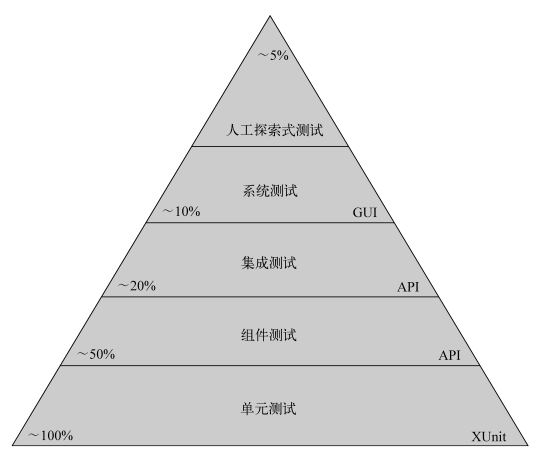
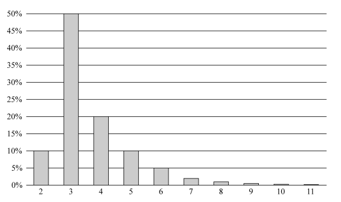

程序员的职业素养笔记
目录
1 专业主义
“专业主义”有很深的含义，它不但象征着荣誉与骄傲，而且明确意味着责任与义务。这 两者密切相关，因为从你无法负责的事情上不可能获得荣誉与骄傲。
1.2 承担责任
没有对例行程序进行测试就交付软件是不负责任的。为了如期交付产品，忽略了测试环节，整个过程中只考虑要如何保全自己的颜面，却没顾及客户和雇主的声誉。
1.3 首先，不行损害之事
要对自己的不完美负责。代码中难免会出现 bug，但这并不意味着你不用对它们负责；没人能写出完美的软件，但这并不表示你不用对不完美负责。
所谓专业人士，就是能对自己犯下的错误负责的人，哪怕那些错误实际上在所难免。所以，雄心勃勃的专业人士们，你们要练习的第一件事就是“道歉”。道歉是必要的，但还不够。你不能一而再、再而三地犯相同的错误。职业经验多了之后，你的失误率应该快速减少，甚至渐近于零。失误率永远不可能等于零，但你有责任让它无限接近零。
1.3.1 不要破坏软件功能
让 QA 找不出任何问题因此，发布软件时，你应该确保 QA 找不出任何问题。故意发送明知有缺陷的代码，这种做法是极其不专业的。什么样的代码是有缺陷的呢？那些你没把握的代码都是！有些家伙会把 QA 当作啄木鸟看待。他们把自己没有全盘检查过的代码发送过去，想等 QA 找出 bug 再反馈回来。没错，有些公司确实按照所发现的 bug 数来奖励测试人员，揪出 的 bug 越多，奖金越多。
且不说这么做是否会大幅增加公司成本，严重损害软件，是否会破坏计划并让企业对开发小组的信心打折扣，也不去评判这么做是否等同于懒惰失职，把自己没把握的代码发送给 QA 这么做本身就是不专业的。这违背了“不行损害之事”的原则。
每次 QA 找出问题时，更糟糕的是用户找出问题时，你都该震惊羞愧，并决心以此为戒。
要确信代码正常运行你怎么知道代码能否常运行呢？很简单，测试！一遍遍地测，翻来覆去、颠来倒去地测，使出浑身解数来测！你或许会担心这么狂测代码会占用很多时间，毕竟，你还要赶进度，要在截止日期前完工。如果不停地花时间做测试，你就没时间写别的代码了。言之有理！所以要实行自动化测试。写一些随时都能运行的单元测试，然后尽可能多地执行这些测试。
要用这些自动化单元测试去测多少代码呢？还要说吗？全部！全部都要测！
我是在建议进行百分百测试覆盖吗？不，我不是在 建议 ，我是在 要求 ！你写的每一行代码都要测试。完毕！但是有些代码不是很难测试吗？是的，但之所以很难测试，是因为设计时就没考虑如何测试。唯一的解决办法就是要设计易于测试的代码，最好是先写测试，再写要测的代码。
这一方法叫做测试驱动开发（TDD），我们在随后的章节里会继续谈到。
1.3.2 不要破坏结构
成熟的专业开发人员知道，聪明人不会为了发布新功能而破坏结构。结构良好的代码更灵活。以牺牲结构为代价，得不偿失，将来必追悔莫及。
所有软件项目的根本指导原则是，软件要易于修改。如果违背这条原则搭建僵化的结构，就破坏了构筑整个行业的经济模型。
简言之，你必须能让修改不必花太高代价就可以完成。
不幸的是，实在是已有太多的项目因结构糟糕而深陷失败的泥潭。那些曾经只要几天就能完成的任务现在需要耗费几周甚至几个月的时间。急于重新树立威望的管理层于是聘来更多的开发人员来加快项目进度，但这些开发人员只会进一步破坏结构，乱上添乱。
描述如何创建灵活可维护的结构的软件设计原则和模式已经有许多了。专业的软件开发人员会牢记这些原则和模式，并在开发软件时认真遵循。但是其中有一条实在是没几个软件开发人员会认真照做，那就是， 如果你希望自己的软件灵活可变，那就应该时常修改它！
要想证明软件易于修改，唯一办法就是做些实际的修改。如果发现这些改动并不像你预想的那样简单，你便应该改进设计，使后续修改变简单。
该在什么时候做这些简单的小修改呢？ 随时！ 关注哪个模块，就对它做点简单的修改来改进结构。每次通读代码的时候，也可以不时调整一下结构。
这一策略有时也叫“无情重构”，我把它叫作“童子军训练守则”：对每个模块，每检入一次代码，就要让它比上次检出时变得更为简洁。每次读代码，都别忘了进行点滴的改善。这完全与大多数人对软件的理解相反。他们认为对上线运行的软件不断地做修改是 危险的 。错！让软件保持固定不变才是危险的！如果一直不重构代码，等到最后不得不重构时，你就会发现代码已经“僵化了”。
为什么大多数开发人员不敢不断修改他的代码呢？因为他们害怕会改坏代码！为什么会有这样的担心呢？因为他们没做过测试。
话题又回到测试上来了。如果你有一套覆盖了全部代码的自动化测试，如果那套测试可以随时快速执行，那么 你根本不会害怕修改代码 。怎样才能证明你不怕修改代码呢？那就是，你一直在改。
专业开发人员对自己的代码和测试极有把握，他们会极其疯狂随意地做各种修改。他们敢于随心所欲修改类的名称。在通读代码时，如果发现一个冗长的方法，他们肯定会将它拆分，重新组织。他们还会把 switch 语句改为多态结构，或者将继承层次重构成一条“命令链”。简单地说，他们对待代码，就如同雕塑家对待泥巴那样，要对它进行不断的变形与塑造。
1.4 职业道德
雇主出了钱，你必须付出时间和精力。为了说明问题，就用一周工作 40 小时的美国标准来做参照吧。这 40 小时应该用来解决雇主的问题，而不是你自己的问题。
你应该计划每周工作 60 小时。前 40 小时是给雇主的，后 20 小时是给自己的。在这剩余的 20 小时里，你应该看书、练习、学习，或者做其他能提升职业能力的事情。
在此，我不是说要占用你全部的业余时间。我是指每周额外增加 20 小时，也就是大约每天 3 小时。如果你在午饭时间看看书，在通勤路上听听播客，花 90 分钟学一门新的语言，那么你就都能兼顾到了。
或许你会觉得这样做只会让人精力枯竭。恰恰相反，这样做其实能让你免于枯竭匮乏。假设你是因为热爱软件而成为软件开发者，渴望成为专业开发者的动力也正是来自对软件的热情，那么在那 20 小时里，就应该做能够激发、强化你的热情的事。那 20 小时应该充满乐趣！
1.4.1 了解你的领域
下面列出了每个专业软件开发人员必须精通的事项。
- 设计模式。必须能描述 GOF 书中的全部 24 种模式，同时还要有 POSA 书中的多数模式的实战经验。
- 设计原则。必须了解 SOLID 原则，而且要深刻理解组件设计原则。
- 方法。必须理解 XP、Scrum、精益、看板、瀑布、结构化分析及结构化设计等。
- 实践。必须掌握测试驱动开发、面向对象设计、结构化编程、持续集成和结对编程。
- 工件。必须了解如何使用 UML 图、DFD 图、结构图、Petri 网络图、状态迁移图表、流程图和决策表。
1.4.2 坚持学习
软件行业的飞速改变，意味着软件开发人员必须坚持广泛学习才不至于落伍。不写代码的架构师必然遭殃，他们很快会发现自己跟不上时代了；不学习新语言的程序员同样会遭殃，他们只能眼睁睁看着软件业一路发展，把自己抛在后面；学不会新规矩和新技术的开发人员更可怜，他们只能在日渐沦落的时候看着身边人越发优秀。
你会找那些已经不看医学期刊的医生看病吗？你会聘请那些不了解最新税法和判例的税务律师吗？雇主们干吗要聘用那些不能与时俱进的开发人员呢？
读书，看相关文章，关注博客和微博，参加技术大会，访问用户群，多参与读书与学习小组。不懂就学，不要畏难。
1.4.3 练习
业精于勤。真正的专业人士往往勤学苦干，以求得自身技能的纯熟精炼。只完成日常工作是不足以称为练习的，那只能算是种执行性质的操作，而不是练习。练习，指的是在日常工作之余专门练习技能，以期自我提升。
那么软件开发者该怎样来不断训练自己呢？本书会用一整章的篇幅来谈论各种练习技巧，所以在此先不赘述了。简单说，我常用的一个技巧是重复做一些简单的练习，如“保龄球游戏”或“素数筛选”，我把这些练习叫作“卡塔”（kata）。卡塔有很多类型。卡塔的形式往往是一个有待解决的简单编程问题，比如编写计算拆分某个整数的素数因子等。练卡塔的目的不是找出解决方法（你已经知道方法了），而是训练你的手指和大脑。
每天我都会练一两个卡塔，时间往往安排在正式投入工作之前。我可能会选用 Java、Ruby、Clojure 或其他我希望保持纯熟的语言来练习。我会用卡塔来培养某种专门的技能，比如让我的手指习惯点击快捷键或习惯使用某些重构技法等。
不妨早晚都来个 10 分钟的卡塔吧，把它当作热身练习或者静心过程。
kata，这个词目前还没有公认的译法，可以理解为“套路”，或者某种固定的“形”。——译者注
1.4.4 合作
学习的第二个最佳方法是与他人合作。专业软件开发人员往往会更加努力地尝试与他人一起编程、一起练习、一起设计、一起计划，这样他们可以从彼此身上学到很多东西，而且能在更短的时间内更高质量地完成更多工作。
1.4.5 辅导
俗话说：教学相长。想迅速牢固地掌握某些事实和观念，最好的办法就是与你负责指导的人交流这些内容。这样，传道授业的同时，导师也会从中受益。
同样，让新人融入团队的最好办法是和他们坐到一起，向他们传授工作要诀。专业人士会视辅导新人为己任，他们不会放任未经辅导的新手恣意妄为。
1.4.6 了解业务领域
每位专业软件开发人员都有义务了解自己开发的解决方案所对应的业务领域。如果编写财务系统，你就应该对财务领域有所了解；如果编写旅游应用程序，那么你需要去了解旅游业。你未必需要成为该领域的专家，但你仍需要用功，付出相当的努力来认识业务领域。
开始一个新领域的项目时，应当读一两本该领域相关的书，要就该领域的基础架构与基本知识作客户和用户访谈，还应当花时间和业内专家交流，了解他们的原则与价值观念。
最糟糕、最不专业的做法是，简单按照规格说明来编写代码，但却对为什么那些业务需要那样的规格定义不求甚解。相反，你应该对这一领域有所了解，能辨别、质疑规格说明书中的错误。
1.4.7 与雇主/客户保持一致
雇主的问题就是你的问题。你必须弄明白这些问题，并寻求最佳的解决方案。每次开发系统，都应该站在雇主的角度来思考，确保开发的功能真正能满足雇主的需要。
开发人员之间互相认同是容易的，但把一方换成雇主，人们就容易产生“彼”“此”之分。专业人士会尽全力避免这样的狭隘之见。
1.4.8 谦逊
编程是一种创造性活动。写代码是无中生有的创造过程，我们大胆地从混沌之中创建秩序。我们自信地发布准确无误的指令，稍有差错，机器的错误行为就可能造成无法估量的损失。因此，编程也是极其自负的行为。
专业人士知道自己自负，不会故作谦逊。他们熟知自己的工作，并引以为荣；他们对自己的能力充满自信，并因此勇于承担有把握的风险。专业人士不是胆小鬼。
然而，专业人士也知道自己会摔跟头，自己的风险评估也有出错的时候，自己也有力不从心的时候。这时候，如果他们照照镜子，会看到那个自负的傻瓜正对着自己笑。
因此，在发现自己成为笑柄时，专业人士会第一个发笑。他从不会嘲讽别人，自作自受时他会接受别人的嘲讽。反之，他则会一笑了之。他不会因别人犯错就对之横加贬损，因为他知道，自己有可能就是下一个犯错的人。
专业人士都清楚自己的自负，也知道上天会注意到这种自负，并加以惩戒。如若果真遭遇挫折，最好的办法就是按照霍华德说的——一笑了之吧！
2 说“不”
专业人士敢于说明真相而不屈从于权势。专业人士有勇气对他们的经理说“不”。你怎么能对自己的老板说“不”呢？毕竟，他们可是你的老板啊！难道不该照你老板说的去做吗？
不应该照做。只要你是一名专业人士，那就不应该照做。
奴隶没有权利说“不”。劳工或许也对说“不”有所顾虑。但是专业人士应该懂得说“不”。事实上，优秀的经理人对于敢于说“不”的人，总是求贤若渴。因为只有敢于说“不”，才能真正做成一些事情。
2.1 对抗角色
每位经理都承担着工作职责，绝大部分经理也知道该如何尽职尽责。其中一部分的工作职责，便是要竭尽所能追求和捍卫他们设定的目标。
同样，程序员也自有其工作职责所在，绝大多数程序员也知道该如何出色地尽职尽责。如果他们是专业程序员的话，他们也会竭尽所能地去追求和捍卫自身的目标。
你的经理要求你在明天之前完成登录页面，这就是他在追求和捍卫的一个目标，那是尽他的工作职责。如果你明知第二天之前不可能完成登录页面，嘴上却说“好的，我会试试的”，那么便是你失职了。这时候，尽职的唯一选择是说“不，这不可能”。
可是难道你不该照经理说的话去做吗？当然不该，你的经理指望的是，你能像他那样竭尽所能地捍卫自己的目标。这样你们俩才能得到 可能的最好结果 。
可能的最好结果，是你和你的经理共同追求的目标。最关键的是要找到那个共同目标，而这往往有赖于协商。
“为什么”重要吗
尽管这样，知道“为什么”可能还是会有助 Mike 了解并接受事实。那是最好不过的了。如果 Mike 恰好有技术背景和好脾气去倾听理解，这些解释也许会有用。另一种情况则是，Mike 可能会不认同 Paula 的结论，他可能会觉得 Paula 的做法不对，他可能会告诉她不用做完整的测试和代码审查，或者可以把第 12 步省略掉，诸如此类。有时候，提供太多细节，只会招致更多的微观管理。
2.2 高风险时刻
最要说“不”的是那些高风险的关键时刻。越是关键时刻，“不”字就越具价值。
这一点应该不证自明。当公司存亡成败皆系于此时，你必须尽己所能，把最好的信息传递给你的经理。这往往意味着要说“不”。
2.3 要有团队精神
我们都听说过具备“团队精神”是多么重要。具备团队精神，意味着恪尽职守，意味着当其他队员遭遇困境时你要援手相助。有团队精神的人会频繁与大家交流，会关心队友，会竭力做到尽职尽责。
有团队精神的人不会总是说“是”。
2.3.1 试试看
面对 Mike 的施压，Paula 的最糟回应是“好的，我们会试试看。”在此我也不想引述尤达大师的话，但是他的话在这里很贴切。是的， 没有“试试看”这回事 。
或许你不这么认为吧？或许你觉得“尝试”是种积极的举动。毕竟，如果哥伦布不去尝试，他又怎么可能发现美洲大陆呢？
“尝试”一词有许多定义。在此，我的意思是“付出额外的精力”。Paula 还能付出什么余力来做到 6 周内交付呢？如果还有余力可施的话，那么也就意味着她和她的团队此前并未尽全力。他们此前一定是有所保留了。
许诺“尝试”，就意味着你承认自己之前未尽全力，承认自己还有余力可施。许诺“尝试”，意味着只要你再加把劲还是可以达成目标的；而且，这也是一种表示你将再接再厉去实现目标的承诺。因此，只要你许诺自己会去“尝试”，你其实是在承诺你会确保成功。这样，压力就要由你自己来扛了。如果你的“尝试”没有达成预期的结果，那就表示你失败了。
你之前是否有所保留未尽全力呢？如果用掉这些预留的精力，你能完成目标吗？抑或，在做出尝试的承诺时，你其实根本就是在自寻失败？
如果承诺尝试，你其实也在承诺将改变自己原来的方案。你是在承认原来的方案中存在不足。如果承诺尝试，你其实是在告诉他们，你有新方案。新方案是什么？你将对自己的行为做出哪些改变？你说你在“尝试”，那么你的做法将会有何不同？
如果你既没有新方案，又不准备改变自己的行为，如果事事仍然都按你承诺“尝试”之前的方法去做，那么，所谓的“尝试”指的又是什么呢？
如果你此前并未有所保留，如果你没有新方案，如果你不会改变你的行为，如果你对自己原先的估计有充分的自信，那么，从本质上讲，承诺“尝试”就是一种不诚实的表现。你在 说谎 。你这么做的原因，可能是为了护住面子和避免冲突。
2.3.2 消极对抗
Paula 做了个有趣的决定。她猜 Mike 不会把她的预估结果告诉 Don。她可以任由 Mike 走向悬崖，她可以确保各种相关谈话记录在档。这样一来，当灾难降临时，她可以证明自己在某时某刻给过 Mike 什么建议。这是一种消极对抗。她如果这样做，就是任由 Mike 走上绝路。
另一种做法是，她也可以通过和 Don 直接交流来阻止灾难发生。这么做的确有风险，但这也真正体现了团队精神的全部内涵。如果一列载货列车向大家冲来，而只有你一人有所察觉，你可以轻轻抽身退到轨道外，眼看其他人被车碾过，也可以大喊：“车！车来了！快离开！”
3 说“是”
3.1 承诺用语
口头上说。心里认真。付诸行动。
做出承诺，包含三个步骤。
- 口头上说 自己将会去做。
- 心里认真 对待做出的承诺。
- 真正付诸行动 。
3.1.1 识别“缺乏承诺”的征兆
在承诺做某事时，应当留意自己的用词，因为这些用词透露了我们对待承诺的认真程度。实际情况当然不只是注意在我们所说的话中是否含有某几个词这么简单。但如果在其中找不到这几个神奇的词，很可能我们自己根本就没把承诺太当真，或者，这表明我们可能不相信这些词具备的功效。
以下示例中包含的几个用词和短语，会透露“缺乏承诺”的蛛丝马迹，要注意搜寻。
需要/应当 。“我们要把这活做完。”“我需要减肥。”“有人应当负责去推动这件事。”
希望/但愿 。“希望明天我能完成这个任务。”“希望改天我们能再见面。”“但愿我有时间做这件事。”“但愿电脑能快点。”
让我们 （而不是“让我”）。“让我们回头再见。”“让我们把这事做完。”
3.1.2 真正的承诺听起来是怎样的
前一小节所列措辞的共同点是，说话的人要么显得事情不在“我”的掌控范围内，要么不愿意承担个人责任。每个例子中，大家都表现得仿佛自己是某种情势的“受害者”，而不是掌控者。
而事实是， 你，你自己 ， 始终都能 掌控某些事情，也就是说，总 有些事 是你可以承诺做到的。
识别真正承诺的诀窍在于，要去搜寻与下列相似的语句：我将在……之前……（例如，我将在周二之前完成这个任务。）
这句话的关键在哪里呢？ 你对自己将会做某件事做了清晰的事实陈述，而且还明确说明了完成期限 。那不是指别人，而是说的自己。你谈的是自己会去做的一项行动，而且，你不是可能去做，或是可能做到，而是必须做到。
这时，你的措辞已经切换到“承诺”模式了，之后便要继续走完下面两个步骤：言必信，行必果。
下面给出的是让你没能做到“言必信，行必果”的一些可能原因，同时还附了一些应对方法。
之所以没成功，是因为我寄希望于某某去做这件事。
你只能承诺自己能 完全掌控 的事。比如，如果你的目标是完成一个还依赖于另一团队的模块，那么你无法承诺自己既能够完成这个模块，还能实现该模块与其他团队所负责模块间的无缝集成。但你能承诺自己会采取一些具体行动来达成最终目标。
如果最终目标依赖于他人，那么你就应该采取些具体行动，接近最终目标。
之所以没成功，是因为我不太确信是否真能完成得了。
即使目标无法完成，你仍能全力前进，离目标更近些。而弄清楚目标能否达成这件事，便是你可以采取的努力行动之一。
之所以没成功，是因为有些时候我真的无能为力。这样的事情时有发生。有些事情先前你可能没预料到，这很现实。但如果你仍然希望自己能够不负众望，那就赶紧去调整别人对你的预期，越快越好！
如果你无法兑现承诺，那么最重要的就是尽早向你的承诺对象发出预警，越快越好，越早越好。你越早向各利益相关方发出预警信号，整个团队就越有可能抓住机会，中止并重新评估当前的活动，并决定是否采取些措施或做出些改变（比如调整优先级等）。这么一来，你仍有可能达成之前的承诺，或者，用另一个承诺来代替先前的承诺。
在此，有一点相当重要：如果你不尽早告诉他人可能的问题，就错失了让他们帮助你达成目标、兑现承诺的机会。
3.1.3 总结
今天的程序员肯定得去面对诸如估算、确定最后期限以及面对面交流等沟通活动。做出承诺或许听来令人有点害怕，但它能够帮助程序员解决在沟通中可能发生的不少问题。如果你能够一直信守承诺，大家会以为你“是一名严谨负责的开发人员”。在我们这行中，这也是最有价值的评价。
3.2 学习如何说“是”
之前我费尽唇舌说明要如何学会说“不”。但是，学会如何说“是”也同样重要。
3.2.1 “试试”的另一面
假设 Peter 正负责修改“评价引擎”。他个人预估，这些修改工作需要耗费他 5～6 天的时间。另外，他认为为本次修改编写文档还需要几个小时。周一早上，他的经理 Marge 向他询问进展状况。
Marge：“Peter，周五前你能完成对评价引擎的修改吗？” Peter：“我想应该可以。” Marge：“包括文档吗？” Peter：“我会试试看尽力把文档也写完。”
或许 Marge 没有听出 Peter 话语里的犹豫不决，但他显然没有对此明确做出承诺。Marge 提的问题需要得到明确回答，“能”或是“不能”，但是 Peter 的回答却含糊不清。
注意，“试试”这个词在这里被滥用了。上一章里，我们认为“试试”意味着“仍有余力可施”。而在这里，Peter 所说的“试试”，则是“可能做得到，也可能做不到”的意思。
Peter 如果能像下面这样回答，则要好一些。 Marge：“Peter，周五前你能完成对评价引擎的修改吗？” Peter：“可能可以，但也可能得到下周一。” Marge：“包括文档吗？” Peter：“写文档要再多花上几个小时，这样的话，有可能下周一可以完成，不过也可能会到下周二。”
这段对话里，Peter 的措辞更为实诚。他清楚地向 Marge 表达了自己的不确定感。Marge 或许能够应付得了这种不确定，但也可能无法接受。
3.2.2 坚守原则
Marge：“Peter，到底是能还是不能，我需要个明确的答案。周五前你能完成对评价引擎的修改并写好文档吗？”
对 Marge 来说，这么问无可厚非。她负责掌管进度，关于周五这个时间点，她需要得到一个明确的回答。那么，Peter 该怎么回答呢？
Peter：“这样的话，Marge，我只能说‘不能’了。关于完成修改并写好文档，有十足把握的时间点，我估计最快得到下周二。” Marge：“你确保周二一定完成吗？” Peter：“是的，我保证，周二肯定一切就绪。”
但是，如果 Marge 的确需要这些代码修改和文档在周五前便完成，那又该怎么办呢？
Marge：“Peter，下周二对我来说真的很成问题。我们的技术文档工程师 Willy 下周一可以投入项目。他需要五天时间完成用户手册，如果我周一早上拿不到评价引擎的文档，那他也就没办法按时完成手册了。你能先把文档写完吗？” Peter：“不行，必须先改好代码才行，因为文档是从测试运行结果中生成的。” Marge：“好吧，那你就没别的办法可以在下周一早上前完成修改和文档了吗？”
下面就该 Peter 做出个决定了。他很有可能可以在周五完成评价引擎的修改，甚至可能可以在回家过周末前把文档也写完。如果进度比预期的要慢些，他还可以选择周六再加几小时班赶下工。那么，他该怎么对 Marge 说呢？
Peter：“Marge，是这样的，如果我周六再加几小时班，还是很有可能可以在下周一早上之前完成全部工作的。”
这能解决 Marge 的问题吗？不能，这只不过是增加了些可能概率而已，Peter 也本该告诉她这种可能方案。
Marge：“那我能指望下周一早上便拿到想要的结果吗？” Peter：“可能可以，但我也没法打包票。”
对 Marge 来说，这样的回答可能还是不够理想。
Marge：“是这样的，Peter，我的确需要拿到一个明确的时间点。不管用什么方法，你能确保下周一早上之前搞定一切吗？”
这时，Peter 可能会冒险放弃原则。如果不写测试，他或许可以更快点完成任务。如果不做重构，不运行整套回归测试，或许也可以快点完成任务。
此时，如果是专业开发人员，就不会放弃底线。首先，这种假设本身就是错误的。即使不写测试，不做重构，省掉完整的回归测试，Peter 也无法更快完成任务。多年经验告诉我们，打破这些纪律和原则，必然会拖慢进度。
其次，身为专业开发人员，Peter 有责任根据标准规范自身工作。代码必须经过测试，代码必须要有对应的测试代码。要确保代码清晰整洁，而且必须确保没有影响到系统的其他部分。
作为专业开发人员，Peter 已经承诺会遵循和捍卫这些标准。他做出的其他所有承诺，都应该和这份承诺保持一致。所以，这一长串的“如果……或许……”的念头，要彻底打消。
Peter：“不，Marge，我没法确保能在周二之前的某天就完成全部工作。如果这把你的进度表搞乱了，我也只能说抱歉，我们面对的实际情况就是如此。” Marge：“真糟糕。我原本指望这个任务能更快些完成的。你确认如此吗？” Peter：“是的，我确认，可能要一直到下周二才能完成。” Marge：“好吧，我想我该去和 Willy 谈谈，看看他是否能重新安排日程。”
这个例子里，Marge 接受了 Peter 的回答，并开始寻求其他解决方法。但如果 Marge 已经别无他法了呢？如果 Peter 是最后的希望所在呢？
Marge：“Peter，听我说，我知道这挺强人所难的，但我真的需要你想办法在下周一早上之前能够完成这些任务。这真的至关重要。你能再想想其他什么办法吗？”
既然如此，Peter 便开始想着是不是该狠狠加加班，甚至可能得花掉周末大部分的时间。 对此，他必须切实地考虑自己的精力储备。口头上说自己会在周末搞定这些事情是很容易的，但真要花精力高质量地完成工作会困难许多。
专业人士对自己的能力极限了如指掌。他们十分清楚自己还能保持效率加班多长时间，也非常明白要付出的代价。
这时，Peter 认为工作日加几小时班、然后周末再赶一下工应该就够了，他对此相当自信。
Peter：“好的，Marge，这样吧。我会打个电话回家，跟家人说一下我要加班。如果他们没意见，我能保证在下周一早上之前完成任务。甚至下周一早上我还会过来公司看看，确保 Willy 这边一切顺利。不过之后我就会回家休息，直到周三才会回来上班。你看这样行吗？”
这十分公平。Peter 知道，如果自己加班的话，一定可以完成代码修改和文档编写的任务。他也明白，在这之后的几天需要休整，才有精力回来继续工作。
3.3 结论
专业人士不需要对所有请求都回答“是”。不过，他们应该努力寻找创新的方法，尽可能做到有求必应。当专业人士给出肯定回答时，他们会使用正式的承诺，以确保各方能明白无误地理解承诺的内容。
4 编码
4.1 做好准备
编码是一项颇具挑战也十分累人的智力活动。相比其他类型的活动，编码要求更加聚精会神。因为在编码时你必须平衡互相牵制的多种因素。
- 首先，代码必须能够正常工作。必须理解当前要解决的是什么问题以及该如何解决。必须确保编写的代码忠实遵循解决方案。必须管理好解决方案的每一处细节，并且使语言、平台、现有架构以及当前系统的所有问题和平共处。
- 代码必须能够帮你解决客户提出的问题。很多时候，客户提出的需求其实并没能真正解决他们自己的问题。这有赖于你去发现这些问题并与客户交流，以确保代码能够满足客户的真实需求。
- 代码必须要能和现有系统结合得天衣无缝。你的代码不能让系统变得更僵硬、更脆弱、更晦涩，必须要妥善管理好各种依赖关系。简而言之，编写代码时必须遵循稳健的工程原则。
- 其他程序员必须能读懂你的代码。这不仅包括要写好注释这类事，还包括要精心锤炼代码，使它能够表达你的编程意图。要做到这点很不容易。事实上，这可能是程序员最难精通的一件事。
同时要平衡好所有这些关注点颇为困难。长时间维持高度集中精神是有难度的。再加上在团队或组织中工作时常会遭遇到各种问题与干扰，以及需要留意和关注的各种日常琐事。总之，编码时无可避免地会受到各种干扰。
当你无法全神贯注地编码时，所写代码就有可能出错。代码中可能会存在不少错误，也可能会存在错误的结构，模糊晦涩，令人费解，无法解决客户的实际问题。总之，最终你可能必须返工修改代码甚至重写。在心烦意乱的状态下工作，只会造成严重的浪费。
如果感到疲劳或者心烦意乱，千万不要编码。强而为之，最终只能再回头返工。相反，要找到一种方法来消除干扰，让心绪平静下来。
4.1.1 凌晨 3 点写出的代码
我最糟糕的代码，是在凌晨 3 点写出来的。
疲劳的时候，千万不要写代码。奉献精神和职业素养，更多意义上指要遵循纪律原则而非成为长时间工作的工作狂。要确保自己已经将睡眠、健康和生活方式调整到最佳状况，这样才能做到在每天的 8 小时工作时间内全力以赴。
4.1.2 焦虑时写下的代码
焦虑时根本就不应该编写代码。当然，有许多焦虑无法在一两个小时内便能解决，而且老板也无法长期容忍我们因为要解决个人问题而不投入工作。关键所在是要学会如何关闭后台进程，或至少要能够降低其优先级，这样焦虑就不会造成持续的干扰。
我使用将时间分块的方法来解决这个问题。我会花专门的一块时间，也许是一个小时，来处理造成焦虑的问题，而不是强迫自己忍受着内心的焦虑煎熬继续编程。如果小孩生病了，我会打个电话回家询问一下情况。如果和妻子之间此前有点争论，我会打电话和她好好沟通清楚。如果出现金钱方面的问题，我会花些时间思考如何才能处理好财务问题。我知道我不可能在这一小时里就解决全部问题，但这样做可能就可以减少心中的焦虑，使后台进程终止。
理想情况下，应该使用私人时间去解决私人问题。像上面这样在办公室里花一个小时解决私人问题，是一件令人惭愧的事。专业开发人员善于合理分配个人时间，以确保工作时间段中尽可能富有成效。也即是说，在家中时就应该专门安排时间去解决焦虑，这样就不会把焦虑情绪带到办公室里。
另一方面，如果发现自己虽然人坐在办公室里，但内心的焦虑正在不断削弱工作效率，那么最好还是花上一个小时让它们先安静下来，这要好过硬逼自己去写代码，因为这样憋出来的代码以后也将不得不抛弃（如果还要与之长期相伴，那就更糟糕了）。
4.2 流态区
关于高效率状态，大家已经写了很多，这种状态通常被称为“流态”。有些程序员将之称为“流态区”。不管用什么名字，你可能都不陌生，甚至有过这种体验。这是程序员在编写代码时会进入的一种意识高度专注但思维视野却会收拢到狭窄的状态。在这种状态下，他们会感到效率极高；在这种状态中，他们会感到“绝无错误”。因此他们一直苦苦追求进入这种状态，并经常以能在那种状态下维持多久来衡量自我价值。
一些曾经进入这种状态但终又从中摆脱出来的人给出了一点儿忠告：避免进入流态区。这种意识状态并非真的极为高效，也绝非毫无错误。这其实只是一种“浅层冥想”状态，在这种状态下，为了追求所谓的速度，理性思考的能力会下降。
让我说得更清楚些。在流态区，你可能可以敲出更多的代码。如果你当时正在做 TDD，你会更快速地重复“红/绿/重构”循环。你会收获一种愉悦感或征服感。问题在于，在流态区状态下，你其实放弃了顾及全局，因此，你很可能会做出一些后来不得不推倒重来的决策。在流态区写代码可能会快些，但是后面你将不得不更多地回头重新审视这些代码。
结对编程最大的一个好处在于，结对中的任一方都不可能进入流态区。流态区是一种与世隔绝的状态，而结对则要求持续密切地进行沟通。事实上，我经常听到关于结对编程的抱怨便是，结对会阻碍人们进入流态区。很好！流态区正是要避免进入的状态。
不过，也并非总是如此。有时候流态区正是你希望进入的状态。这个时候，就是当你潜心练习的时候。我们会在另外一章中详谈“练习”。
4.2.1 音乐
我意识到，在听音乐时无法写好代码。音乐并没有帮助我专注于编码。事实上，听音乐似乎消耗了一部分宝贵的脑力资源，而这些资源本该用于编写设计良好的整洁代码。
也许对你而言可能不是这样，也许音乐有助于你编写代码。我知道许多人在写代码时喜欢戴着耳机，但愿音乐真的能够帮到他们。但同时我也怀疑，真实的情况是，音乐正带领他们进入流态区。
4.2.2 中断
结对是用以应对中断的一种好方法。当你接答电话或回答其他同事的问题时，结对搭档能够维护住中断处的上下文。等到你重新回去和结对搭档一起工作时，他能够很快地帮你恢复被打断前的思维。
另一种很有帮助的方法便是采用 TDD。失败的测试能帮你维护住编码进度的上下文。当处理完中断重新回去时，你很清楚下一步任务便是让这个失败的测试通过。
当然，中断无法避免，总有干扰会打断你、消耗你的时间。发生这种情况时要记住一点，也许下次也会轮到你去打断别人请求帮助。因此，礼貌地表现出乐于助人的态度才是专业的态度。
4.3 阻塞
有的时候，死活就是写不出代码来。我自己就曾经遇到过，也看到其他人身上发生过这种情况。干坐在电脑前面，但什么都写不出来。
这时候，通常你会去找一些其他事情干。去查看邮件，去翻阅推特，去翻看些书，检查进度或者读点文档。也可能会去召集会议，或找其他人交流。你会去做各种事情，这样便不必死盯着屏幕，干坐在那里。
哪些原因会导致这些阻塞呢？前面我们已经谈及许多因素。对于我而言，另外一个主要因素便是睡眠。如果睡眠不足，我就什么代码也写不出来。其他因素还包括焦虑、恐惧和沮丧等。
有一个很简单的好办法可以解决这个问题。这个办法几乎屡试不爽，既简单易行，又能够帮助你写出很多代码。
这个方法便是：找一个搭档结对编程。
这个方法很有效也很神奇。当坐到别人旁边的时候，本来挡住去路的问题忽然就会消失了。和别人一起工作时，会发生一种生理上的变化。我不知道这种变化是什么，但是我能够真切感知到这种变化。在我的大脑或身体中会发生一些化学变化，这种变化能帮助我冲破阻塞继续前进。
这个方案并非是万能的。有时候这种变化只会持续一两个小时，之后焦躁疲乏的情绪会加剧，这时候我就只好离开结对搭档，找个僻静的地方躲一会儿。有时候，即使是和别人坐在一起，我能做的也只是跟在别人后面亦步亦趋而已。但对我而言，结对带来的主要好处是它能够帮我重新激活思维。
创造性输入
还有其他一些事物可以让我免于陷入阻塞状态。很久之前我就已经明白这一点：“创造性输出”依赖于“创造性输入”。
我平时广泛阅读，不放过各种各样的资料。包括软件、政治、生物、航天、物理、化学、数学，还有其他许多方面的资料。不过，科幻小说最能激发我的创造力。
对你来说，可能是其他东西。也许是一本精彩的悬疑小说、一首诗，甚至是一本言情小说。我认为关键要点在于，创造力会激发创造力。这里面也存在一些“逃避现实”的成分。在抛开问题的几个小时内，我会在潜意识中非常活跃地模拟各种挑战和创意，最终，内心中会升腾起几乎无法遏止的力量，激励自己去创造。
4.4 调试
调试时间
出于某些原因，软件开发人员会认为调试时间并非编码时间。他们认为存在调试时间是天经地义的，调试不等于编码。但是对于公司来讲，调试时间和编码时间是一样昂贵的，因此，如果我们能够做些事情避免甚或消除调试活动，那是最为理想不过的。
如今我花在调试上的时间比十年前要少很多。我没有仔细度量过差了多少，但是我相信差不多应该只有原来的十分之一的样子。之所以能够显著降低调试时间，是因为我采用了“测试驱动开发”这一实践，在另一章中我们会对之进行详细讨论。
不管是否采纳 TDD 或其他一些同等效果的实践 ，衡量你是否是一名专业人士的一个重要方面，便是看你是否能将调试时间尽量降到最低。绝对的零调试时间是一个理想化的目标，无法达到，但要将之作为努力方向。
医生不喜欢重新打开病人的胸腔去修复此前犯下的错误。律师不喜欢重新接手此前搞砸的案子。经常重新返工的医生或律师会被认为不专业。同样，制造出许多 bug 的软件开发人员也不专业。
4.5 保持节奏
软件开发是一场马拉松，而不是短跑冲刺。你无法全程一直以最快的速度冲刺来赢得比赛，只有通过保存体力和维持稳定节奏来取胜。无论是赛前还是赛中，马拉松选手都会仔细调整好自己的身体状态。专业程序员也会同样仔细地保存好自己的精力和创造力。
4.5.1 知道何时应该离开一会
没解决这个问题就不能回家？噢不，你可以回家，而且你应该回家！创造力和智力来自于大脑的高速运转。当你感到疲劳时，它们就不翼而飞了。当大脑已经无法正常思考却硬逼自己在深夜还加班解决问题，你只会把自己折腾得更累，但是如果开车回家好好洗个澡，则问题很有可能会豁然开朗。
当碰到困难而受阻时，当你感到疲倦时，就离开一会儿，让富有创造力的潜意识接管问题。精力分配得当，你将能在更短的时间内以更少的精力完成更多的事情。让自己保持好节奏，让团队保持好节奏。了解你的创造力和智力运行的模式，充分发挥它们的优势而非与之背道而驰。
4.5.2 开车回家路上
我曾在下班开车回家的路上，解决了许多问题。开车会占用大量与创造性无关的脑力资源。你必须让眼睛、双手和大脑专注于开车，因此，你必须暂时从工作问题中脱离出来。而从问题中暂时脱离出来，十分有助于大脑以不同的但更具创造性的方式搜求各种解决方案。
4.5.3 洗澡
我也曾经在洗澡时解决了大量问题。也许是清晨的水流能够将我彻底唤醒，使我可以深入盘点昨晚睡觉时大脑中浮现的所有解决方案。
埋头忙于解决问题时，有时候可能会由于和问题贴得太近，无法看清楚所有的可选项。由于大脑中富有创造性的部分被紧张的专注力所抑制，你会错过很棒的解决方案。因此，有时候解决一个问题最好的办法是回家，吃顿好的，然后上床睡觉，再在第二天清晨醒来洗个澡。
4.6 进度延迟
你总有一天会遭遇延迟的情况。即使是最优秀的程序员、最敬业的员工，也不能避免碰到延迟。有时候，则只是因为我们预估时过于乐观夸下了海口，最后延迟的情况无可避免。
管理延迟的诀窍，便是早期检测和保持透明。最糟糕的情况是，你一直都在告诉每个人你会按时完成工作，到最后期限来临前你还在这样说，但最终你只能让他们大失所望。不要这么做。相反，要根据目标定期衡量进度，使用三个考虑到多种因素的期限：乐观预估、标称预估、悲观预估。尽量严守这三个时间点。不要把预估和期望混淆在一起！把全部这三个数字呈现给团队和利益相关者，并每天修正这些数字。
4.6.1 期望
如果你呈现的这些数字可能会错过最终期限，那又该怎么办呢？举个例子，假设 10 天后有一个展会，我们需要在展会上展示产品。但是，你对正在开发的特性的时间预估是 8/12/20。
不要对在 10 天内全部完成特性开发抱有期望！这种期望会杀死整个项目。期望会毁掉项目进度表，玷污你的名声，期望会把你拖进大麻烦中。如果展会是 10 天后召开，而你的常规预估已经是 12 天，你是绝不可能完成任务的。要让团队和利益相关者明白这个形势，除非另有后备预案，否则不要轻易松口退步。不要让其他任何人对此抱有期望。
4.6.2 盲目冲刺
如果经理极力要求你尽力赶上最后截止期限，那该怎么办呢？如果经理坚持要求你“按期完成”该怎么办？ 坚决维持你的估算！ 你最初的估算比你在老板在面前时做出的任何调整估算都要准确得多。告诉老板你已经考虑过所有情况（因为你确实已经这么做了），唯一能够加快进度的方法便是缩减范围。 不要经受不住诱惑盲目冲刺。
如果可怜的开发人员在压力之下最终屈服，同意尽力赶上截止日期，结局会十分悲惨。那些开发人员会开始抄近路，会额外加班加点工作，抱着创造奇迹的渺茫希望。这是制造灾难的最佳秘诀，因为这种做法给自己、给团队以及利益相关方带来了一个错误的期望。这样每个人都可以避免面对真正的问题，把做出必要的艰难决定的时机不断后延。
其实快速冲刺是做不到的。你无法更快地写完代码。你无法更快地解决问题。如果试图这么做，最终只会让自己变得更慢，同时也只能制造出一堆混乱，让其他人也慢下来。
因此，必须明白告诉老板、团队和利益相关方，让他们不要抱有这种期望。
4.6.3 加班加点
这样一来，你的老板会说：“那每天额外加班两小时行不行？周六来加班行不行？拜托，肯定有办法能够挤出充足的时间准时开发完需求的。”
加班确实有用，而且有时候也有必要。有时候，通过一天工作 10 个小时再加上周末加班一两天，你确实能够达成原本不可能的进度。但这么做的风险也很高。在额外加班 20%的工作时间内，其实你并无法完成 20%的额外工作。而且，如果连续两三周都要加班工作，则加班的措施必败无疑。
因此，不应该采用额外加班加点工作的方案，除非以下三个条件都能满足：（1）你个人能挤出这些时间；（2）短期加班，最多加班两周；（3）你的老板要有后备预案，以防万一加班措施失败了。
最后一条至为关键。如果老板无法向你清楚说明加班方案失败的后备预案，那么你就不该同意接受加班方案。
4.6.4 交付失误
在程序员所能表现的各种不专业行为中，最糟糕的是明知道还没有完成任务却宣称已经完成。有时候这只是一个撒过头的谎言，这就已经很糟糕了。但是，如果试图对“完成”做出一种新的合理化定义，潜在的危险性是最大的。我们自欺欺人地认为任务已经完成得足够好，然后转入下一项任务。我们自己给自己找借口说，其他还没来得及完成的工作可以等有更充裕时间的时候再来处理。
4.6.5 定义“完成”
可以通过创建一个确切定义的“完成”标准来避免交付失误。最好的方法是让业务分析师和测试人员创建一个自动化的验收测试，只有完全通过这些验收测试，开发任务才能算已经完成。
4.7 帮助
编程并非易事。事实上，仅凭一己之力无法写出优秀的代码。既使你的技能格外高超，也肯定能从另外一名程序员的思考与想法中获益
4.7.1 帮助他人
因此，互相帮助是每个程序员的职责所在。将自己封闭在格子间或者办公室里与世隔绝，有悖于专业的职业精神。你的工作不可能重要到你不能花一丁点儿时间来帮助别人。事实上，作为专业人士，要以能够随时帮助别人为荣。
要清楚团队伙伴的状态。如果有人看起来遇到了麻烦，就应该向他提供帮助。帮助别人所带来的显著影响一定会让你感到相当惊讶。给他人提供帮助并非说明你比人家聪明很多，而是因为你带来了一个新的视角，对于解决问题起到了显著的催化作用。
帮助别人的时候，你可以坐下来和他一起写代码，为此需预留出一个小时甚至更长的时间，当然实际也许没那么久，但是不要让自己看起来十分仓促，仿佛只是随便应付。要全情投入到任务中。当你离开时，可能会发现自己从中收获的东西比给予的还要多。
4.7.2 接受他人的帮助
如果有人向你伸出援手，要诚挚接受，心怀感激地接受帮助并诚意合作。不要死命护住自己的地盘拒绝别人的帮助。不要因为自己进度压力很大，就推开伸来的援手。不妨给他半个小时的时间。如果到时那个人不能真正帮到你，再礼貌地致歉用感谢结束谈话也不迟。要记住，如同要以乐于助人为荣一样，也要以乐于接受别人的帮助为荣。
要学会如何请求帮助。当你受阻时，或者有点犯晕时，或者只是绕一个问题绕不出去时，不妨请求别人的帮助。如果你刚好和团队在一起办公，只需将手头的工作停下来，跟大家说“我需要帮忙”。否则，可以使用 yammer1、twitter、电子邮件或者桌上的电话寻求帮助。再强调一次，这体现的是一种专业的职业精神。如果帮助唾手可得却让自己一个人堵在那儿，是很不专业的表现。
4.7.3 辅导
在本书后面，我将用一整章对此进行阐述。现在让我先简单指出一下，辅导缺乏经验的程序员是那些经验丰富的程序员的职责。培训课程无法替代，书本也无法替代。除了自身的内驱力和资深导师的有效辅导之外，没有东西能将一名年轻的软件开发人员更快地提升为敏捷高效的专业人士。因此，再强调一次，花时间手把手地辅导年轻程序员是资深程序员的专业职责所在。同样道理，向资深导师寻求辅导也是年轻程序员的专业职责。
5 测试驱动开发
“测试驱动开发”（TDD）自在行业中首次亮相，至今已经有十余年了。它最早是极限编程（XP）运动的一部分，但此后已经被 Scrum 和几乎所有其他敏捷方法所采纳。即使是非敏捷的团队也在实践 TDD。
5.1 此事已有结论
首先要声明以下几点。
- 此事已有定论！
- 争论已经结束。
- GOTO 是有害的。
- TDD 确实可行。
是的，过去数年间人们对 TDD 颇有争议，就此发表了不少博客和文章，如今争议依旧来袭。所不同的是，以前他们是认真尝试着去批判和理解 TDD，而现在只有夸夸其谈而已。结论很清楚，TDD 的确切实可行，并且，每个开发人员都要适应和掌握 TDD。
5.2 TDD 的三项法则
- 在编好失败单元测试之前，不要编写任何产品代码。
- 只要有一个单元测试失败了，就不要再写测试代码；无法通过编译也是一种失败情况。
- 产品代码恰好能够让当前失败的单元测试成功通过即可，不要多写。
遵循这三项法则的话，大概 30 秒钟就要运行一次代码。先写好一个单元测试的一小部分代码，很快，你会发现还缺少一些类或函数，所以单元测试无法编译。因此必须编写产品代码，让这些测试能够编译成功。产品代码够用即可，然后再回头接着写单元测试代码。
这个循环不断反复。写一些测试代码，然后再写一些产品代码。这两套代码同步增长，互为补充。测试代码之匹配于产品代码，就如抗体之匹配于抗原一样。
5.3 TDD 的优势
如果将 TDD 作为一项行业纪律，那么每天要写上几十个测试，每周要写上成百上千个测试，每年写上成千上万个测试。任何时刻，代码有任何修改，都必须运行手头有的全部测试。
5.3.2 缺陷注入率
有不少报告和研究称 TDD 能够显著降低缺陷。从 IBM 到微软，从 Sabre 到 Symantec，一家又一家公司，一个又一个团队，经历过缺陷下降为原来的 1/2、1/5 甚至 1/10 的过程。这些数字不能不让专业人士动容。
5.3.3 勇气
看到糟糕代码时，你为什么不修改呢？看到混乱的函数时，你的第一反应是：“真是一团糟，这个函数需要整理。”你的第二反应是：“我不会去碰它！”为什么？因为你知道，如果去动它，就要冒破坏它的风险；而如果你破坏了它，那么它就缠上你了。
但是如果你能确信自己的整理工作没有破坏任何东西，那又会是怎样一种情况呢？如果你拥有我刚才提到的那种把握，会怎样呢？如果你只需点击一个按钮，然后 90 秒内便可以确信自己的修改没有破坏任何东西，只是让代码变得更好了，那么又会是怎样的一种情况呢？
这是 TDD 最强大之处。拥有一套值得信赖的测试，便可完全打消对修改代码的全部恐惧。当看见糟糕的代码时，就可以放手整理。代码会变得具有可塑性，你可以放心打磨出简单而满意的结果。
当程序员不再惧怕整理代码时，他们便会动手整理！整洁的代码更易于理解，更易于修改，也更易于扩展。代码更简洁了，缺陷也更少了。整个代码库也会随之稳步改善，杜绝业界常见的放任代码劣化而视若不见的状况。
专业程序员怎么能够容忍代码持续劣化呢？
5.3.4 文档
你用过第三方合作伙伴的框架吗？通常第三方合作伙伴会发给你一份由文档工程师编写的版式十分漂亮的手册。这些手册通常都配图精美制作精良，解释框架的配置、部署、操作方法及其他用途。在最后的附录部分通常是排版杂乱的部分，包含了全部的代码示例。
翻开手册时，你首先会看哪里？如果你是程序员，应该先看代码示例。因为你知道代码不会撒谎，代码说真话。文档配图也许很精美，但是想要知道如何使用代码，你就需要阅读代码。
遵循 TDD 三项法则的话，所编写的每个单元测试都是一个示例，用代码描述系统的用法。如果遵循三项法则，那么对于系统中的每个对象，单元测试都可以清楚描述对象的各种创建方法。对于系统中的每个函数，单元测试可以清楚描述函数的各种有意义的调用方式。对于需要知道的任何用法，单元测试都会提供详尽的描述。
单元测试即是文档。它们描述了系统设计的最底层设计细节。它们清晰准确，以读者能够理解的语言写成，并且形式规整可以运行。它们是最好的底层文档。哪个专业人士不想提供一份这样的文档呢？
5.3.5 设计
当你遵循三项法则并且做到了测试先行时，还会感到进退维谷。通常情况下，你对于想要写的代码十分清楚，但是三项法则却要求你先写出目前无法通过的单元测试，因为要测试的代码尚未诞生！这意味着必须测试将要编写的代码。
测试代码的一个问题是必须隔离出待测试的代码。如果一个函数调用了其他函数，单独测试它通常会比较困难。为了编写测试，你必须找出将这个函数和其他函数解耦的办法。换言之，测试先行的需要，会迫使你去考虑什么是好的设计。
如果不先写测试，就有可能出现各个函数耦合在一起最终变成无法测试的一大团的问题。如果后面再写测试，你也许能够测试整个大块的输入和输出，但是很难测试单个函数。因此，遵循三项法则并且测试先行，便能够产生一种驱动力，促使你做出松耦合的设计。哪个专业人士不想采用能够促使他们做出更好设计的工具？
“但是我可以稍后再写测试啊。”你也许会这样说。不，不可能。实际上也不是绝对不可以，没错，你是能够稍后写些测试。如果很仔细地来看，也许后写测试还可以达到较高的覆盖率。但是事后写的测试只是一种防守。而先行编写的测试则是进攻，事后编写测试的作者已经受制于已有代码，他已经知道问题是如何解决的。与采用测试先行的方式编写的测试代码比起来，后写的测试在深度和捕获错误的灵敏度方面要逊色很多。
5.3.6 专业人员的选择
本节要点可以归结为一句话：TDD 是专业人士的选择。它是一项能够提升代码确定性、给程序员鼓励、降低代码缺陷率、优化文档和设计的原则。对 TDD 的各项尝试表明，不使用 TDD 就说明你可能还不够专业。
5.4 TDD 的局限
尽管 TDD 有诸多优点，但是它既非宗教信仰，也非魔力公式。遵循这三项法则并不能担保一定会带来上述好处。即使做到了测试先行，仍有可能写出糟糕的代码。没错，因为写出的测试代码可能就很糟糕。
另外，在某些场合照这三项法则去做会显得不切实际或不合适。这种情况很少，但确实存在。如果遵循某项法则会弊大于利，专业的开发人员就当然不会选用它。
6 练习
6.1 引子
举例来说，我有个叫 FitNesse 的 Java 项目，代码共有 6.4 万行。包含所有单元测试和集成测试的一次完整构建，耗时不到 4 分钟。如果这些测试全部通过，我就可以发布这个项目。所以，从源代码到部署的整个 QA 过程，只要不到 4 分钟。编译所花的时间几乎可以忽略，局部测试只需要几秒。所以我差不多每分钟可以执行十次编译/测试。
当然，保持这样的速度不见得是好事。通常，更好的做法是慢下来，仔细思考。但是也有些时候，尽可能快地重复编译/测试的过程，可以带来很高的生产率。
任何事情，只要想做得快，都离不开练习。要想尽可能快地重复编码/测试过程，就必须能迅速做出决定。这需要识别各种各样的环境和问题，并懂得应付。
6.2 编程柔道场
在柔道场里有各种各样的活动，下面简单介绍几个。
6.2.1 卡塔
在武术里，卡塔是一套设计好的、用来模拟搏斗一方的招式。目标则是要逐步把整套招式练习到纯熟。习武者努力训练自己的身体来熟悉每一招，把它们连贯成流畅的套路。训练有素的卡塔看起来相当漂亮。
漂亮还是其次，练习卡塔并不是为了舞台表演。训练意识和身体是为了真正搏斗时能够正确应对。它的目的在于，在需要的时候，可以凭借本能完美出招。
与之类似，编程卡塔也是一整套敲击键盘和鼠标的动作，用来模拟编程问题的解决过程。练习者不是在解决真正的问题，因为你已经知道了解决方案。相反，你是在练习解决这个问题所需要的动作和决策。
编程卡塔的最终目标，也是逐步练习以达到纯熟。反复的练习会训练大脑和手指如何动作和反应。在不断练习当中，你或许会发现动作的细微进步，或者解决问题效率的小幅提升。
要学习热键和导航操作，以及测试驱动开发、持续集成之类的方法，找整套的卡塔来练习都是相当有效的。更重要的是，它特别有利于在潜意识中构筑通用的问题与解决方案间的联系，以后在实际编程中遇到这类问题，你马上就知道要如何解决。
和习武者一样，程序员应该懂得多种不同的卡塔，并定期练习，确保不会淡化或遗忘。在http://katas.softwarecraftsmanship.org 收录了很多卡塔，其他的可以在 http://codekata.pragprog.com 找到。我钟爱的一些卡塔如下。
- 保龄球：http://butunclebob.com/ArticleS.UncleBob.TheBowlingGameKata。
- 素因子：http://butunclebob.com/ArticleS.UncleBob.ThePrimeFactorsKata。
- 自动换行：http://thecleancoder.blogspot.com/2010/10/craftsman-62-dark-path.html。
真正的挑战是把一个卡塔练习到炉火纯青，你可以窥见其中的韵律。要做到这一点可不容易。
6.2.2 瓦萨
我学习忍术（jujitsu）时，在练习场上会花很多时间用于两个人练习瓦萨（wasa）。瓦萨基本可以说是两个人的卡塔。其中的招式需要精确地记忆，反复演练。一个人负责攻，另一个人负责守。攻守双方互换时，各种动作要一而再、再而三地重复。
程序员可以用一种叫“乒乓”的游戏来进行类似的练习：两个人选择一个卡塔，或者一个简单问题，一个人写单元测试，另一个人写程序通过单元测试，然后交换角色。
6.2.3 自由练习
自由练习（randori）就是不限制形式的搏击。在忍术的柔道训练场中，可以设立一系列的搏斗场景，然后亲身参与。有时候一个人被告知要防御，其他人则轮流攻击他。有时候由两个或更多的人攻，一个人守（通常是老师防守，他几乎总是会赢）。还有些时候我们会安排二对二，以及其他的花样。
模拟搏斗与编程并不是特别贴合。不过，很多编程练习场中都会玩一种叫“自由练习” 的游戏。它很像由两个参与者解决问题的瓦萨，只是自由练习是有很多人参与的，而且规则是可以延续的。在自由练习中，屏幕被投影到墙上，一个人写测试，然后坐下来，另一个人写程序通过测试，再写下一个测试。桌子边的人一个个轮流接下去，或者有兴趣的人可以自己排队参加。无论怎么安排，都是非常有趣的。
从这种练习中可以学到很多东西。你会深入地了解人们解决问题的过程，进而掌握更多的方法，提升专业技能。
6.3 自身经验的拓展
职业程序员通常会受到一种限制，即所解决问题的种类比较单一。老板通常只强调一种语言、一种平台，以及程序员的专门领域。经验不够丰富的程序员，履历和思维中都存在某种贻害无穷的盲区。经常可以看到这样的情景：程序员发现，面对行业的周期性变化造成的新局面，自己并没有做好准备。
6.3.1 开源
保持不落伍的一种方法是为开源项目贡献代码，就像律师和医生参加公益活动一样。开源项目有很多，为其他人真正关心的开源项目做一点贡献，应该可以算是提升技能的最好办法了。
所以，如果你是 Java 程序员，请为 Rails 项目做点贡献。如果你为老板写了很多 C++，可以找一个 Python 项目贡献代码。
6.3.2 关于练习的职业道德
职业程序员用自己的时间来练习。老板的职责不包括避免你的技术落伍，也不包括为你打造一份好看的履历。医生练习手术不需要病人付钱，球员练习绕桩（通常）不需要球迷付钱，乐手练习音阶也不需要乐迷付钱。所以老板没有义务为程序员的练习来买单。
既然你用自己的时间练习，就不必限制在老板规定的语言和平台。可以选择你喜欢的语言，练习你喜欢的技术。如果你工作用的.NET，可以在午餐时间或者在家里，练习写一点 Java 或者 Ruby。
6.4 结论
无论如何，专业人士都需要练习。他们这么做，是因为他们关心自己能做到的最好结果。更重要的是，他们用自己的时间练习，因为他们知道保持自己的技能不落伍是自己的责任，而不是雇主的责任。练习的时候你是赚不到钱的，但是练习之后，你会获得回报，而且是丰厚的回报。
7 验收测试
专业开发人员既要做好开发，也要做好沟通。“输入糟糕，输出也会糟糕”对程序员同样适用，所以职业程序员会重视与团队及业务部门的沟通，确保这种沟通的准确、流畅。
7.1 需求的沟通
开发方与业务方之间最常见的沟通是关于需求的。业务方描述他们认为自己需要的东西，程序员按照自己理解的业务方表达的需求来开发。至少从理论上来说，应该是这样。但在现实里，关于需求的沟通是极其困难的，其中会出现各种问题。
7.1.1 过早精细化
做业务的人和写程序的人都容易陷入一个陷阱，即过早进行精细化。业务方还没有启动项目，就要精确知道最后能得到什么；开发方还没有评估整个项目，就希望精确知道要交付什么。双方都贪求不现实的精确性，而且经常愿意花大价钱来追求这种精确。
不确定原则问题在于，东西画在纸上与真正做出来，是不一样的。业务方看到真正的运行情况时就会意识到，自己想要的根本不是这样的。一看到已经满足的需求，关于到底要什么，他们就会冒出更好的想法——通常并不是他们当时看到的样子。在工作中，有一种现象叫观察者效应，或者不确定原则。每次你向业务方展示一项功能，他们就获得了比之前更多的信息，这些新信息反过来又会影响他们对整个系统的看法。
最终结果就是，需求完成得越精细，就越容易被忽视，系统因此也谈不上完工。
- 预估焦虑开发人员也会掉进精确化的陷阱。他们知道必须评估整个系统，而且通常认为需要精确评估。但是，事实并非如此。首先，即便拥有全面准确的信息，评估也通常会存在巨大的变数。其次，因为不确定原则的存在，不可能通过反复推敲实现早期的精确性。需求是一定会变化的，所以追求那种精确性是徒劳的。专业开发人员知道，评估可以而且必须基于不那么精确的需求，这些评估只是评估而已。为强调这点，职业开发人员通常会在评估中使用误差棒，这样业务方就能理解不确定性（可以参考第 10 章“预估”）。
7.1.2 迟来的模糊性
避免过早精细化的办法是尽可能地推迟精细化。专业开发人员直到着手开发的前一刻才会把需求具体化。但是，这可能造成另一个问题：迟来的模糊性。
业务方常常会提出不同意见。这时候他们会发现，相比解决分歧，更好的办法是换一种说法，所以会寻找各方都同意的关于需求的表述，而不是去解决争端。我曾听到 Tom DeMarco1 说：“需求文档中的每一点模糊之处，都对应着业务方的一点分歧。当然，模糊不只来自于分歧或争论。有时候，业务方会想当然地认为看文档的人懂得自己的意思。”
7.2 验收测试
验收测试这个名词用得太多太泛了。有人认为，验收测试就是在接受正式发布之前由用户执行的程序，也有人认为它是 QA 测试。在本章，我们把验收测试定义为业务方与开发方合作编写的测试，其目的在于确定需求已经完成。
7.2.1 “完成”的定义
身为专业开发人员，我们经常面对的不确定因素之一是“完成”的各种说法。开发人员说他已经完成任务了，他想表达的是什么意思？是指开发人员已经有足够的信心把这项功能部署到生产系统，还是他可以准备 QA 程序，或者是他已经写完了代码并且跑通了，但还没有真正测试过？
不同的团队对“完成”（done 和 complete）的定义各不相同，我曾经历过许多。其中一支团队甚至有“完成”和“真正完成”两种说法。专业开发人员的“完成”只能有一个含义：完成，就是完成。
完成意味着所有的代码都写完了，所有的测试都通过了，QA 和需求方已经认可。这，才是完成。
那么，怎样能达到这种程度的完成，同时不影响迭代的速度呢？你应该编写整套的自动化测试，它们全都通过，就意味着满足了所有的要求。如果对功能的验收测试全部通过，就算真正完成了。
专业开发人员会根据自动化的验收测试来定义需求。他们与业务方和 QA 一起工作，确保自动化测试能够真正覆盖完成所需的各项指标。
7.2.2 沟通
验收测试的目的是沟通、澄清、精确化。开发方、业务方、测试方对验收测试达成共识，大家都能明白系统的行为将会是怎样。各方都应当记录这种准确的共识。在专业开发人员看来，与业务方、测试方协同工作，确保大家都明白要做的是什么，是自己的责任。
7.2.3 自动化
验收测试都应当自动进行。在软件开发的周期中，确实有时候需要手动测试，但是验收测试不应当手工进行，原因很简单：要考虑成本。
相比手动测试，自动化测试的成本非常低，让人手工执行测试脚本不划算。专业开发人员认为，实现验收测试的自动化是自己的责任。
7.2.4 额外工作
写这些测试是为了确定系统的各项指标符合要求。确定这些细节指标的目的，是为了确定系统的指标；只有确定这些细节指标，我们这些程序员才能确知“完成”；只有确定这些细节指标，业务方才能确认他们花钱开发的系统确实满足了需求；只有确认这些指标，才可以真正做到自动化测试。所以，不要把它们看作额外的工作，而应当看成节省时间和金钱的办法。这些测试可以避免你的开发误入歧途，也可以帮你确认自己已经完工。
7.2.5 验收测试什么时候写，由谁来写
在理想状态下，业务方和 QA 会协作编写这些测试，程序员来检查测试之间是否有冲突或矛盾。但实际上，业务方通常没有时间，或者有时间也难以达到所需要的细致程度，所以他们通常会把测试交给业务分析员、QA 甚至是开发人员。如果只能由开发人员来写测试，应当确保写测试的程序员与开发所测试功能的程序员不是同一个人。
通常，业务分析员测试“正确路径”，以证明功能的业务价值；QA 则测试“错误路径”、边界条件、异常、例外情况，因为 QA 的职责是考虑哪些部分可能出问题。
遵循“推迟精细化”的原则，验收测试应该越晚越好，通常是功能执行完成的前几天。在敏捷项目中，只有在选定了下一轮迭代（Iteration）或当前冲刺（Sprint）所需要的功能之后，才编写测试。
迭代开始的第一天，就应当准备好最初的几项验收测试。然后每天都应当完成一些验收测试，到迭代的中间点，所有的测试都应当准备完毕，如果这时候还没有准备好所有的测试，就必须抽调一些开发人员来补充编写测试。如果这种情况经常发生，这个团队应当增加 BA 或 QA。
7.2.6 开发人员的角色
实现某项功能的代码，应该在对应的验收测试完成后开始。开发人员运行这些验收测试，观察失败的原因，将验收测试与系统联系起来，然后实现需要的功能，让测试通过。
7.2.7 测试的协商与被动推进
写测试的人也是普通人，也可能犯错误。有时候，你刚开始实现某个功能，就会发现有些测试没什么意义。有些太复杂，有些不灵活，有些包含愚蠢的假定，还有些干脆就是错的。如果你是开发人员，要想通过这类测试可不轻松。
身为专业开发人员，与编写测试的人协商并改进测试是你的职责。绝不能被动接受测试，更不能对自己说：“噢，测试是这么要求的，我就得这么办。”
请记住，身为专业开发人员，你的职责是协助团队开发出最棒的软件。也就是说，每个人都需要关心错误和疏忽，并协力改正。
7.2.8 验收测试和单元测试
验收测试不是单元测试。单元测试是程序员写给程序员的，它是正式的设计文档，描述了底层结构及代码的行为。关心单元测试结果的是程序员而不是业务人员。
验收测试是业务方写给业务方的（虽然可能最后是身为开发者的你来写）。它们是正式的需求文档，描述了业务方认为系统应该如何运行。关心验收测试结果的是业务方和程序员。
有人认为区分两种测试是多此一举，所以要消灭“重复劳动”。尽管单元测试和验收测试的对象通常是相同的，但绝对谈不上“重复”。
首先，尽管两者测试的可能是同一个对象，其机制和路径却是不同的。单元测试是深入系统内部进行，调用特定类的方法；验收测试则是在系统外部，通常是在 API 或者是 UI 级别进行。所以两者的执行路径是截然不同的。
7.2.9 图形界面及其他复杂因素
编写 GUI 的验收测试很麻烦。但如果把 GUI 当成 API 那样处理，而不是看成按钮、滚动条、格子、菜单，那验收测试就简单多了。这可能有点奇怪，但优秀的设计就是这样的。
有条设计原则是“单一责任原则”（SRP）。按照这条原则，应该把根据不同原因而变化的元素分开，把根据同一原因变化的元素归类分组。GUI 的设计也应该这样。
布局、格式、工作流，都会因为效率和美观的原因而变化，但是 GUI 背后的功能却不会因此变化。所以，在编写 GUI 的验收测试时，必须使用 GUI 背后相对稳定的抽象元素。
通过恰当的界面测试
更好的办法是，测试系统功能时，应当调用真实的 API，而不是 GUI。测试程序应当直接调用 GUI 使用的 API，这并不是什么新鲜事。几十年来，设计专家一直在教导我们，要把 GUI 和业务逻辑分开。
通过 GUI 来进行测试是非常容易出问题的，除非你要测试的仅仅是 GUI。因为 GUI 很容易变化，所以针对 GUI 的测试很不稳定。
应当尽可能地减少 GUI 测试。GUI 很容易变化，所以这类测试是不稳定的。GUI 测试越多，维护它们的难度就越大
7.2.10 持续集成
请务必确保在持续集成系统中，单元测试和验收测试每天都能运行好几次。整套持续集成系统应该由源代码管理系统来触发。只要有人提交了代码，持续集成系统就会开始构建，并运行所有的测试，测试结果会用电子邮件发送给团队所有人
7.3 结论
交流细节信息是件麻烦事。尤其是开发方和业务方交流关于程序的细节时，更是如此。通常，各方握手言欢，以为其他人都明白自己的意思。双方以为取得了共识，然后带着截然不同的想法离开，这种事太平常不过了。
要解决开发方和业务方沟通问题，我所知道的唯一有效的办法就是编写自动化的验收测试。这些测试足够正式，所以其结果有权威性。这些测试不会造成模糊，也不可能与真实系统脱节。它们，就是无可挑剔的需求文档。
8 测试策略
8.1 QA 应该找不到任何错误
8.1.1 QA 也是团队的一部分
刚才的说法可能会令人感觉 QA 和开发人员似乎是彼此对立的，是敌对的关系。并非此意。相反，QA 和开发人员应该紧密协作，携手保障系统的质量。QA 在团队中要扮演的便是需求规约定义者（specifier）和特性描述者（characterizer）。
8.1.2 需求规约定义者
QA 的任务便是和业务人员一起创建自动化验收测试，作为系统真正的需求规约文档。每轮迭代中，他们都可以从业务人员那里收集需求，将之翻译为向开发人员描述系统行为的测试（参考第 7 章）。通常，业务人员编写针对正常路径的测试（happy-path test），而由 QA 编写针对极端情况（corner）、边界状态（boundary）和异常路径（unhappy-path）的测试。
8.1.3 特性描述者
QA 的另一项任务是遵循探索式测试的原则，描述系统运行中的真实情况，将之反馈给开发人员和业务人员。在这项任务中，QA 并没有解析需求，而是在鉴别系统的真实情况。
8.2 自动化测试金字塔
专业开发人员遵循测试驱动开发的要求来创建单元测试。专业开发团队使用验收测试定义系统需求，使用持续集成（第 7 章）保证质量稳步提升；同时，这些测试又属于全局测试体系。拥有一套单元测试和验收测试的同时，还需要有更高层次的测试，这样 QA 才找不出任何错误。图 8-1 显示的是自动化测试金字塔，以图形化方式展现了专业开发组织中所需要的测试种类。

图1 图 8-1 自动化测试金字塔
8.2.1 单元测试
在金字塔底部是单元测试，这些测试由程序员使用与系统开发相同的语言来编写，供程序员自己使用。编写这些测试的目的是在最低层次上来定义系统。开发人员是这样定义待写代码规约的：先编写测试，再编写产品代码。这些单元测试将作为持续集成的一部分来运行，用以确保程序员的代码意图没有遭到破坏。
单元测试是可行的，而且可以做到接近 100%的覆盖率。通常而言，这个数字应该保持在 90%以上。这里说的是真实的覆盖率，而不是那种虽然能通过但并不关心运行结果的错误的单元测试。
8.2.2 组件测试
组件测试是验收测试的一种，第 7 章已经说过。通常，它们是针对系统的各个组件而编写的。系统的组件封装了业务规则，因此，对这些组件的测试便是对其中业务规则的验收测试。
组件测试由 QA 和业务人员编写，开发人员提供辅助。它们需要在 FitNesse、JBehave 或 Cucumber 等组件测试环境下编写（GUI 图形界面组件可以使用 Selenium 或 Watir 之类的 GUI 测试环境）。其目的是让不具备编写测试能力的业务人员也能理解这些测试。
组件测试差不多可以覆盖系统的一半。它们更主要测试的是成功路径的情况，以及一些明显的极端情况、边界状态和可选路径。大多数的异常路径是由单元测试来覆盖测试的。在组件测试层次，对异常路径进行测试并无意义。
8.2.3 集成测试
这些测试只对那些组件很多的较大型系统才有意义。这些测试将组件装配成组，测试它们彼此之间是否能正常通信。照例要使用合适的模拟对象和测试辅助，与系统的其他组件解耦。
集成测试是编排性（choreography）测试。它们并不会测试业务规则，而是主要测试组件装配在一起时是否协调。它们是装配测试，用以确认这些组件之间已经正确连接，彼此间通信畅通。
集成测试一般由系统架构师或主设计师来编写，用以确认系统架构层面的结构是否正确 无误。在这个层次上，也许已经可以进行性能测试和吞吐率测试了。
8.2.4 系统测试
这些测试是针对整个集成完毕的系统来运行的自动化测试，是最终的集成测试。它们不会直接测试业务规则，而是测试系统是否已正确组装完毕，以及系统各个组成部件之间是否能正确交互。在这个层次的测试集中，应该包含吞吐率测试和性能测试。
系统测试由系统架构师和技术负责人来编写，一般使用和 UI 集成测试同样的语言和环境。测试周期视测试运行时间长短而定，相对而言不会过于频繁，但越频繁越好。
系统测试约占测试的 10%。其目的不是要确保正确的系统行为，而是要确保正确的系统构造。底层代码和组件的正确性已经有金字塔中较低层的测试来验证保障。
8.2.5 人工探索式测试
这是需要人工介入、敲击键盘、盯牢屏幕的测试。它们既非自动化的测试，亦非脚本化的测试。这些测试的意图，是要在验证预期行为的时候，探索系统预期之外的行为。为了达到这个目的，需要人类智慧的介入，需要使用人类的创新能力，对系统进行深入研究和探索。预先编写测试计划反而会削弱这类测试的效果
覆盖率并非此类测试的目标。探索式测试不是要证明每条业务规则、每条运行路径都正确，而是要确保系统在人工操作下表现良好，同时富有创造性地找出尽可能多的“古怪之处”。
9 时间管理
9.1 会议
会议的成本是每人每小时 200 美元。这个数字包含了工资、福利、设备损耗等因素。下次开会的时候，不妨算算会议的成本，你会很吃惊的。
关于会议，有两条真理：
- 会议是必需的；
- 会议浪费了大量的时间。
通常，两条真理同时适用于同一场会议。有些与会者认为这两条总结得非常好，有些则认为它们是正确的废话。
专业开发人员同样清楚会议的高昂成本，他们同样清楚自己的时间是宝贵的，他们同样需要时间来写代码，来处理日程表上的事务。所以，如果会议没有现实且显著的成效，他们会主动拒绝。
9.1.1 拒绝
受到邀请的会议没有必要全部参加。参加的会议太多，其实只能证明你不够专业。你应该理智地使用时间，所以必须谨慎选择，应当参加哪些会议，礼貌拒绝哪些会议。
邀请你参加会议的人并不负责管理你的时间，为时间负责的只有你。所以，如果你收到会议邀请，务必确保出席会议可以给自己目前的工作带来切实且显著的成效，否则不必参与。
9.1.2 离席
会议并不总是按计划进行的。有时候你正参加某个会议，但是发现如果之前对此会议知道得多一点，就不会来。还有时候，会议临时增加了议题，或者某个讨厌的家伙霸占了讨论。这些年来，我学到了一条简单规则：如果会议让人厌烦，就离席。
再说一次，仔细管理自己的时间是你的责任。如果你发现参加某个会议是在浪费时间，就应当想个礼貌的办法退出来。
9.1.3 确定议程与目标
我们之所以愿意承担开会的高昂成本，是因为有时候确实需要所有参与者坐在一起，来实现某个目标。为了合理使用与会者的时间，会议应当有清晰的议程，确定每个议题所花的时间，以及明确的目标。
如果收到会议邀请，务必弄清楚指定的议题是什么，每个议题花多长时间，要取得什么成果。如果得不到确切的答案，你可以礼貌拒绝。
如果你已经出席会议，但发现已经偏离或是放弃了原有议程，你应当要求详细列出新的议题和议程。如果没有答案，也应当在合适的时候礼貌离席。
9.1.4 立会
敏捷开发的武器库中包含“立会”：在开会时，所有参会者都必须站着。到场的人依次回答以下 3 个问题：
- 我昨天干了什么？
- 我今天打算干什么？
- 我遇到了什么问题？
这就是全部会议内容。每个问题的回答时间不应当超过 20 秒，所以每个人的发言不超过 1 分钟。即便是 10 个人的小组，开一次这种会议的时间也不会超过 10 分钟。
9.1.5 迭代计划会议
在敏捷开发的武器库中，这大概是难度最大的会议了。如果做得不好，可能浪费大量的时间。开好这种会议需要技巧，这些技巧非常值得学习。
迭代计划会议用来选择在下一轮迭代中实现的开发任务。在会议召开前必须完成两项任务：评估可选择任务的开发时间，确定这些任务的业务价值。如果组织得足够好，验收/组件测试也应当在会议召开前完成，或者至少要有概略方案。
会议的节奏应该足够快，简明扼要地讨论各个候选任务，然后决定是选择还是放弃。会议在每个任务上所花的时间应该限制在 5 到 10 分钟。如果需要更详细的讨论，则应当另选时间，挑出团队中的一部分人专门进行。
凭我的经验，在每轮迭代中，这类会议所花的时间不应当超过 5%。如果一周（40 小时）为一个迭代周期，这类会议时间应当限制在 2 小时内。
9.1.6 迭代回顾和 DEMO 展示
这类会议在迭代的末尾召开。团队成员讨论本轮迭代中什么做得对，什么做得不对。业务方可以看到最新工作成果的 demo。如果组织不当，这类会议可能浪费很多时间，所以不妨在最后一天下班前 45 分钟召开。花 20 分钟来回顾，花 25 分钟来演示。请记住，这类会议只牵涉到最近一两周的工作，所以没有太多内容要讨论。
9.1.7 争论/反对
Kent Beck 曾告诉我一个深刻的道理：“凡是不能在 5 分钟内解决的争论，都不能靠辩论解决。”争论之所以要花这么多时间，是因为各方都拿不出足够有力的证据。所以这类争论依据的不是事实，而是信念。
技术争论很容易走入极端。每一方都有各种说法来支持自己的观点，只是缺乏数据。在没有数据的情况下，如果观点无法在短时间（5～30 分钟）里达成一致，就永远无法达成一致。唯一的出路是，用数据说话。
要小心这类会议：它们的目的是发泄情绪，或者让大家站队。如果会议上只有一面之词，就要避免参加。
如果争论必须解决，就应当要求争论各方在 5 分钟时间内向大家摆明问题，然后大家投票。这样，整个会议花的时间不会超过 15 分钟。
9.2 注意力点数
编程是需要持续投入精力和注意力的智力活动。注意力是稀缺的资源，它类似魔力点数。如果你用光了自己的注意力点数，必须花一个小时或更多的时间做不需要注意力的事情，来补充它。
我不知道该怎么描述注意力点数，但是我感觉它是有形（或许无形）的，能影响注意力的集中和发散。无论如何，你肯定可以觉察到注意力点数的存在，也同样可以感知它是否耗尽。职业开发人员会学习安排时间，妥善使用自己的注意力点数。我们选择注意力点数充裕的时候编程，在注意力点数匮乏时做其他事情。
注意力点数也会随时间流逝而减少。如果不及时使用，它就会消失。会议之所以具有巨大的破坏力，原因之一就在于此。如果你所有的注意力点数都用在了会议上，编程时就大脑空空了。
忧虑和分心也会消耗注意力点数。昨天晚上的夫妻吵架，今天早上的汽车剐蹭，上周忘记付款的账单，都会迅速耗光你的注意力点数。
9.2.1 睡眠
睡眠的重要性怎么强调都不为过。美美一觉醒来，我的注意力点数是最充裕的。好好睡上 7 个小时，我就有足够的注意力点数去做好 8 小时的工作。专业开发人员会安排好他们的睡眠，保证清晨有饱满的注意力点数去上班。
9.2.2 咖啡因
毋庸置疑，对有些人来说，适量的咖啡因可以帮他们更有效地使用注意力点数。但是请小心，咖啡因也会给你的注意力添乱。太多咖啡因会把你的注意力偏转到奇怪的方向。太浓的咖啡会搞得你一整天都沉溺于不重要的事情。
咖啡因的用量和接受程度因人而异。我个人的做法是，早上一杯浓咖啡，中午一罐无糖可乐。有时候我会加倍，但通常这就是上限了。
9.2.3 恢复
在你不集中注意力的时候，注意力点数可以缓慢恢复。漫步一段长路，与朋友聊天，看看窗外，都有助于恢复注意力点数。
有些人选择沉思、反省，也有些人选择小睡一会儿，还有人选择听播客或者翻翻杂志。
我发现，一旦注意力点数耗尽，你就没法控制注意力。你仍然可以写代码，但是多半需要第二天重写，或者在几周或几个月之后备受这段代码的煎熬。所以，更好的办法还是花 30 到 60 分钟来换换脑子。
9.2.4 肌肉注意力
搏击、太极、瑜伽之类体力活动使用的注意力是不同的。即便需要全神贯注，这种注意力也不同于编程时的注意力，因为它们需要的是肌肉的注意力，而编程需要的是心智的注意力。不过，肌肉注意力有助于改善心智注意力，而且不仅仅是简单的恢复。我发现，定期训练肌肉注意力，可以提升心智注意力的上限。
9.2.5 输入与输出
关于注意力，我知道的另一重点是平衡输入与输出。编程是一项创造性劳动。我发现，如果能接触到其他人的创造性思维，我的创造力也最旺盛，所以我阅读大量的科幻小说。这些作者的创造力会激发我对软件的创造力。
9.3 时间拆分和番茄工作法
我用来管理时间的有效办法之一，是使用众所周知的番茄工作法。其基本思想很简单：把厨房用的计时器（通常它的形状很像番茄）设定到 25 分钟。倒计时期间不要让任何事情干扰你的工作。如果电话响了，接起来并礼貌告诉人家，请在 25 分钟之后打来；如果有人来打断你问问题，礼貌地问他是否能过 25 分钟再来问。无论什么干扰，都必须等到 25 分钟结束再处理。毕竟，几乎没有事情会紧急到 25 分钟都等不了。
计时器响的时候，停下手上的工作，转去处理这 25 分钟内遇到的其他事情。之后休息 5 分钟左右。然后，再把定时器设定为 25 分钟，开始一个新的番茄时间段。每完成 4 个番茄时间段时间，休息 30 分钟左右。
9.4 要避免的行为
有时候你工作时会心不在焉。很可能是因为要做的事情让人恐慌、难受，或者厌烦。你可能会认为，工作是你被迫面对的，自己无从脱身。或者，你就是不喜欢这份工作。
优先级错乱
无论什么原因，我们都可以找到办法逃避真正的工作。你说服自己有些工作更紧急，所以转去处理，这种行为叫作优先级错乱——提高某个任务的优先级，之后就有借口推迟真正急迫的任务。优先级错乱是自我麻醉的谎言，因为不能面对真正需要做的事情，所以我们告诉自己，其他事情更重要。我们知道这不是真的，但还是用它来欺骗自己。
其实这不是在欺骗自己：我们真正做的是准备谎言——如果有人问自己在做什么事情，为什么这么做，我们就会摆出这些谎言。我们是在为他人对自己的判断寻找理由和借口。显然，这不是专业的行为，专业开发人员会评估每个任务的优先级，排除个人的喜好和需要，按照真实的紧急程度来执行任务。
9.5 死胡同
所有软件开发者都要遇到死胡同。比如你做了决定，选择了走不通的技术道路。你对这个决定越是坚持，浪费的时间就越多。如果你认为这关系到自己的专业信誉，就永远也走不出来。
慎重的态度和积累的经验可以帮你避免某些死胡同，但是没法完全避免所有的。所以你真正需要的是，在走入死胡同时可以迅速意识到，并有足够的勇气走回头路。这就是所谓的坑法则（The Rule of Holes）：如果你掉进了坑里，别挖。
专业开发人员不会执拗于不容放弃也无法绕开的主意。他们会保持开放的头脑来听取其他意见，所以即使走到尽头，他们仍然有其他选择。
9.6 泥潭
比死胡同更糟的是泥潭。泥潭会减慢你的速度，但不会让你彻底停下来。泥潭会阻碍你前进，但如果使尽全力，你仍然可以取得进展。之所以说泥潭比死胡同更麻烦，是因为在泥潭中，你仍然可以看到前进的道路，而且看起来总是比走回头路要短（虽然实际不是这样）。
真正的问题在于，泥潭和死胡同一样是无可避免的。慎重的态度和积累的经验有助于避开泥潭，但无法彻底避开每一处泥潭。
在泥潭中继续前进的危害是不易察觉的。面对简单问题，你给出解决方案，保持代码的简单、整洁。之后问题不断扩展，越来越复杂，你则扩展代码库，尽可能保持整洁。某天，你发现自己从一开始就做了错误的选择，在需求变化的方向上，程序跟不上节奏。
这就是转折点！你可以回头修正设计，也可以继续走下去。走回头路看起来代价很高，因为要把已有代码推翻重来，但是走回头路绝对是最简单的方法。如果继续前进，系统就可能陷入泥潭，永远不得脱身。
专业开发人员对泥潭的恐惧远远大于死胡同。他们会时刻留神显露出来的泥潭，然后运用各种努力，尽早尽快地脱身。
发现自己身处泥潭还要固执前进，是最严重的优先级错乱。继续前进无异于欺骗自己，欺骗团队，欺骗公司，欺骗客户。你一边走向煎熬所有人的炼狱，一边告诉大家，所有问题都会解决。
10 预估
预估是软件开发人员面对的最简单、也是最可怕的活动之一了。预估影响到的商业价值巨大，关乎声誉，也给我们带来了很多的苦恼和挫折。预估是业务人员和开发人员之间最主要的障碍，横亘在双方之间的种种不信任，几乎都由它引发。
10.1 什么是预估
问题在于，不同的人对预估有不同的看法。业务方觉得预估就是承诺。开发方认为预估就是猜测。两者相差迥异。
10.1.1 承诺
承诺是必须做到的。如果你承诺在某天做成某事，就必须按时完成。即便它意味着你必须每天工作 12 小时，放弃周末的休假，也不得不如此。既然承诺了，就必须兑现。
专业开发人员不随便承诺，除非他们确切知道可以完成。道理就是这么简单。如果你被要求承诺做自己不确定的事情，那么就应当坚决拒绝。如果要求你承诺在某天完成，但是需要每天加班，周末加班，取消休假，那么最后的决定取决于你；不过，不要违背自己的意愿去勉强。
10.1.2 预估
预估是一种猜测。它不包含任何承诺的色彩。它不需要做任何约定。预估错误无关声誉。我们之所以要预估，是因为不知道到底要花多少时间。
不幸的是，大多数软件开发人员都很不擅长预估。这不是因为他们没有掌握关于预估的诀窍——根本没有这样的诀窍。预估的偏差总是很大，原因在于我们并不理解预估的实质。
预估不是个定数，预估的结果是一种概率分布。

图2 图 10-1 概率分布
10.1.3 暗示性承诺
在第 2 章，我们讨论过这个问题。“试试看”是被用滥了的说法。如果 Peter 同意“试试看”，也就是承诺了在 6 天内解决。是的，只有这一种解释，同意试试看就是承诺能够完成。
还会有什么其他解释呢？如果 Peter 说“试试看”，他究竟要做什么呢？是要每天加班吗？显然，就是如此。周末是否也要加班呢？是的，就是如此。他是否要放弃休假呢？是的，这也是“试试看”必需的。这些都是“试试看”的一部分。如果 Peter 没有去做这些事情，Mike 就会责怪他不够努力。
专业开发人员能够清楚区分预估和承诺。只有在确切知道可以完成的前提下，他们才会给出承诺。此外，他们也会小心避免给出暗示性的承诺。他们会尽可能清楚地说明预估的概率分布，这样主管就可以做出合适的计划。
10.2 PERT
1957 年，为支持美国海军的潜艇极地航行计划，计划评审技术（PERT，Program Evaluation and Review Technique）诞生了。PERT 的一部分内容就是对预估的计算方法。这种技术包含了一个非常简单而有效的办法，把预估变成概率分布，让主管们看懂。
你可以根据 3 个数字预估某项任务。这就是三元分析法。
- O：乐观预估。这是非常乐观的数字。如果一切都异常顺利，你可以在这个时间内完成。实际上，为了保证乐观预估有意义，这个数字对应的发生概率应当小于 1%。在 Peter 的例子中，这可能是 1 天，参见图 10-1。
- N：标称预估。这是概率最大的数字。如果画一张柱状图，标称预估就是最高的那个。在图 10-1 中，标称预估是 3 天。
- P：悲观预估。这是最糟糕的数字。它应当考虑到各种意外，比如飓风、核战争、黑洞、其他灾难等。为保证悲观预估有意义，这个数字对应的发生概率也应当小于 1%。在 Peter 的例子中，这个数字是最右边的柱条，也就是 12 天。
有了以上三个预估，我们可以像下面这样描述概率分布：
μ =（O+4N+P）/6
μ 是任务的期望完成时间。在 Peter 的例子中，它等于（1+12+12）/6，也就是大概 4.2 天。通常这个数字都有点水分，因为分布图的右边部分比左边部分长。
σ = (P-O) / 6
σ 是这个任务的概率分布的标准差 2，用来衡量不确定性。如果这个数字很大，就表示非常不确定。对 Peter 来说，它等于（12-1）/6，也就是大概 1.8 天。现在我们知道，Peter 的预估天数是 4.2/1.8。Mike 清楚，他很可能 5 天完成，但也可能要 6 天甚至 9 天。
10.3 预估任务
10.4 大数定律
预估是非常容易出错的，所以才叫预估。控制错误的办法之一是使用大数定律。该定律的意思是：把大任务分成许多小任务，分开预估再加总，结果会比单独评估大任务要准确很多。这样做之所以能提高准确度，是因为小任务的预估错误几乎可以忽略，不会对总的结果产生明显影响。
10.5 结论
专业开发人员懂得如何为业务人员提供可信的预估结果，以便做出计划。如果做不到，或者不确定能做到，专业开发人员不会给出承诺。
专业开发人员一旦做了承诺，就会提供确定的数字，按时兑现。但是大多数情况下，他们都不会做这种承诺，而是提供概率预估，来描述期望的完成时间及可能的变数。
对需要妥善对待的预估结果，专业开发人员会与团队的其他人协商，以取得共识。
11 压力
11.1 避免压力
在压力下保持冷静的最好方式，便是规避会导致压力的处境。规避的方式也许无法完全减除压力，但是可以大大降低压力并缩短高压力期的时间。
11.1.1 承诺
有时有人会代我们做出承诺。比如业务人员可能在没有事先咨询我们的情况下就向客户做出了承诺。发生这种事情时，出于责任感我们必须主动帮助业务方找到方法来兑现这些承诺，但是一定不能接受这些承诺。
其中的差别至关重要。专业人士总会千方百计地帮助业务方找到达成目标的方法，但并不一定要接受业务方代为做出的承诺。最终，如果我们无法兑现业务方所做出的承诺，那么该由当时做出承诺的人来承担责任。
11.1.2 保持整洁
快速前进确保最后期限的方法，便是保持整洁。专业人士不会为了快点前进而乱来。他们明白“快而脏”是自相矛盾的说法。脏乱只会导致缓慢！
让系统、代码和设计尽可能整洁，就可以避免压力。这并非是说我们要花无穷无尽的时间去清理代码，而只是说不要容忍混乱。混乱会降低速度，导致工期延误，承诺失信。因此，要尽力保持输出成果整洁干净。
11.1.3 危机中的纪律
观察自己在危机时刻中的反应，就可以了解自己的信念。如果在危机中依然遵循着你守持的纪律，就说明你确实相信那些纪律。反过来说，如果在危机中改变行为，就说明你并不真正相信常规行为中的原则。
选择那些你在危机时刻依然会遵循的纪律原则，并且在所有工作中都遵守这些纪律。遵守这些纪律原则是避免陷入危机的最好途径。
当困境降临时，也不要改变行为。如果你遵守的纪律原则是工作的最佳方式，那么即使是在深度危机中，也要坚决秉持这些纪律原则。
11.2 应对压力
能预见压力、转移压力和消除压力是很好的，但是有时候不管你多么千方百计地力求防患于未然，依然会有压力降临到你头上。有时候，项目周期就是比任何人此前所估计的要长。有时候，原始设计就是有错误必须返工。有时候，你可能会失去一名重要的团队成员或客户。有时候，你就是做出了一个无法兑现的承诺。这时该怎么办？
11.2.1 不要惊慌失措
正确应对压力。长夜漫漫无心睡眠，无助于更快地解决问题。呆坐着烦躁不安也于事无补。而你可能会犯的最严重的错误，就是鲁莽仓促！要避免产生孤注一掷的想法。鲁莽仓促只会把你带入更深的深渊。
相反，要放松下来。对问题深思熟虑。努力寻找可以带来最好结果的路径，然后沿着那条路径以合理稳定的节奏前进。
11.2.2 沟通
让你的团队和主管知道你正身陷困境之中。告诉他们你所制定的走出困境的最佳计划。请求他们的支援和指引。避免产生的惊恐。没有东西比惊恐更令人愤怒和失去理性。惊恐会让你的压力增大十倍。
11.2.3 依靠你的纪律原则
当事情十分困难时，要坚信你的纪律原则。之所以你会将之奉为纪律，是因为它们可以指引你度过高压时期。这时候尤其要留意各条纪律原则。这不是质疑或无端放弃它们的时候。
战胜压力煎熬的唯一方法，便是依靠那些你已经知道切实有效的东西——你平时遵守的纪律。
11.2.4 寻求帮助
结对！当头脑发热时，找一个愿意和你一起结对编程的伙伴。你会前进得更快，而缺陷却会更少。结对伙伴会帮助你守住原则，制止你的精神错乱。搭档会捕捉住你疏忽遗漏的事情，会提出有帮助的想法，会在你注意力迷失的时候接过你手中的工作继续前进。
同样地，当你看到其他人身处压力之下时，可以伸出援手，和他们结对工作，帮助他们走出困境。
11.3 结论
应对压力的诀窍在于，能回避压力时尽可能地回避，当无法回避时则勇敢直面压力。可以通过慎重承诺、遵循自己的纪律原则、保持整洁等来回避压力。直面压力时，则要保持冷静，与别人多多沟通，坚守自己的原则纪律，并寻求他人的帮助。
12 协作
大多数软件都是由团队开发出来的。当团队成员能够十分专业地互相协作时，整个团队是最为高效的。单打独斗与游离于团队之外都是不专业的表现。
12.1 程序员与人
12.1.1 程序员与雇主
专业程序员的首要职责是满足雇主的需求。这意味着要和你的经理们、业务分析师们、测试工程师们和其他团队成员很好地协作，深刻理解业务目标。这并不是说你必须要成为业务方面的老学究，而是说你需要理解手上正在编写的代码的业务价值是什么，了解雇你的企业将如何从你的工作中获得回报。
专业程序员最糟糕的表现是两耳不闻窗外事，只顾一头将自己埋在技术堆里，甚至连公司业务火烧眉毛行将崩溃了也不闻不问。你的工作职责就是要让业务免于陷入困顿，让公司可以长久发展下去。
因此，专业程序员会花时间去理解业务。他们会和用户讨论他们正在使用的软件，会和销售人员与市场人员讨论所遭遇的问题，会和经理们沟通，明确团队的短期目标和长期目标。
简而言之，他们会将注意力放在与业务同舟共济上。
12.1.2 程序员与程序员
程序员之间通常很难密切合作，这就会带来一些不小的问题。
代码个体所有
不正常的团队最糟糕的症状是，每个程序员在自己的代码周边筑起一道高墙，拒绝让其他程序员接触到这些代码。我曾在许多地方看到过，不少程序员甚至不愿让其他程序员看见他们的代码。这是引发灾难的“最有效秘诀”。
协作性的代码共有权
将代码所有权的各种隔断全部打破、由整个团队共同拥有全部代码的做法，相较于此则要好得多。我赞同这种做法：团队中每位成员都能签出任何模块的代码，做出任何他们认为合适的修改。我期望拥有代码的是整个团队，而非个人。专业开发人员是不会阻止别人修改代码的。他们不会在代码上构造所有权的藩篱，而是尽可能多地互相合作。他们通过合作来达到学习的目的。
结对
许多程序员都不喜欢“结对编程”这一理念。但很奇怪，在紧急情况下，大多数程序员又都愿意结对工作。为什么呢？很显然，因为这是解决问题最有效的方法。老话说得好：“三个臭皮匠胜过一个诸葛亮。”但是，如果在紧急情况下结对是解决问题最有效的方法，那为什么在平常不是呢？
专业人士之所以结对，是因为结对是复查代码最好的方式。系统中不应该包含未经其他程序员复查过的代码。代码复查的方法很多，但大多数方法效率都极其低下。最有效率且最有效果的代码复查方法，就是以互相协作的方式完成代码编写。
12.2 小脑
专业人士会共同工作。当戴着耳机坐在角落里时，你是无法参与合作的。因此，我期望大家能够围坐在一张桌子前，彼此面对面。你要能够感受到其他人的恐惧担忧，要能够听到其他人工作不顺时的牢骚，要有口头上和肢体语言上的下意识的沟通交流。整个团队要像一个统一的整体，彼此连通。
也许你认为自己一个人工作时会做得更好。也许确实如此，但这并不意味着你一个人工作时，整个团队会做得更好。况且，事实上，一个人单独工作时，不太可能会工作得更好。
有些时候，单独工作是正确的。当你只是需要长时间努力思考一个问题时，可以一个人单独工作。当任务琐碎且无足轻重、和另外一个人一起工作显得浪费时，可以一个人工作。但是一般说来，和其他人紧密协作、在大部分时间段中结对工作，是最好的做法。
13 团队与项目
13.1 只是简单混合吗
13.1.1 有凝聚力的团队
形成团队是需要时间的。团队成员需要首先建立关系。他们需要学习如何互相协作，需要了解彼此的癖好、强项、弱项，最终，才能凝聚成团队。
有凝聚力的团队确实有些神奇之处。他们能够一起创造奇迹。他们互为知己，能够替对方着想，互相支持，激励对方拿出自己最好的表现。他们攻无不克。
有凝聚力的团队通常有大约 12 名成员。最多的可以有 20 人，最少可以只有 3 个人，但是 12 个人是最好的。这个团队应该配有程序员、测试人员和分析师，同时还要有一名项目经理
程序员算一组，测试人员和分析师算一组，两组人数比例没有固定限制，但 2∶1 是比较好的组合。所以由 12 个人组成的理想团队，人员配备情况是这样的：7 名程序员、2 名测试人员、2 名分析师和 1 名项目经理。
发酵期
成员克服个体差异性，默契配合，彼此信任，形成真正有凝聚力的团队，是需要一些时间的，可能需要 6 个月，甚至 1 年。但是，凝聚力一旦真正形成，就会产生一种神奇的魔力。团队的成员会一起做计划，一起解决问题，一起面对问题，一起搞定一切。
团队和项目，何者为先
银行和保险公司试图围绕项目来构建团队。这是一种愚蠢的做法。按照这种做法，团队永远都不可能形成凝聚力。每个人都只在项目中的过客，只有一部分时间是在为项目工作，因此他们永远都学不会如何默契配合。
专业的开发组织会把项目分配给已形成凝聚力的团队，而不会围绕着项目来组建团队。一个有凝聚力的团队能够同时承接多个项目，根据成员各自的意愿、技能和能力来分配工作，会顺利完成项目。
13.1.2 如何管理有凝聚力的团队
每个团队都有自己的速度。团队的速度，即是指在一定时间段内团队能够完成的工作量。有些团队使用每周点数来衡量自己的速度，其中“点数”是一种关于复杂度的单位。他们对每个工作项目的特性进行分解，使用点数来估算。然后以每周能完成的点数来衡量速度。
13.2 结论
团队比项目更难构建。因此，组建稳健的团队，让团队在一个又一个项目中整体移动共同工作是较好的做法。并且，团队也可以同时承接多个项目。在组建团队时，要给予团队充足的时间，让他们形成凝聚力，一直共同工作，成为不断交付项目的强大引擎。
14 辅导、学徒期与技艺
计算机科班毕业生的质量一直令我颇感失望。究其原因，并不是这些毕业生不够聪明或缺乏天分，而是由于大学并没有教授真正的编程之道。
14.1 失败的学位教育
并不是所有的计算机科班毕业生都会如此令人失望，还是有不少优秀人才的。但是，我注意到，那些符合要求的毕业生有个共同点：他们几乎都在进入大学之前就已经自学编程，并且在大学里依然保持自学的习惯。
不要误解我的意思。我认同在大学里是有可能获得良好教育的，但是我也认为，在大学里完全也可以蒙混过关，混得一纸文凭，其实什么都不懂。
而且还有另外一个问题。即使是最好的计算机科学学位教学计划，通常也不足以帮助年轻毕业生充分准备好应付工作后遇到的挑战。在这里，我并不是要控诉教学计划里的那些课程。在学校中所学的内容和在工作中发现的实际需要，这两者之间通常会有巨大的差异。
14.2 辅导
14.2.3 非常规辅导
之所以告诉大家这两个故事，是因为它们描述了截然不同的两种辅导，这两种辅导都不是通常字面意义上的“辅导”。在第一个案例中，我通过一本精心编写的手册向作者学习。在第二个案例中，我通过观察他人工作来学习，尽管他们对我视若不见。在这两个案例中，我所获得的知识虽然基础但是意义深远。
坦率地说，这就是我所受到的全部辅导。在 20 世纪 70 年代早期，并没有多少资深的程序员。我后来去哪里工作，就是那里的资深程序员。没人帮助我理解真正专业的程序员是怎样的，也没有什么专门的人教我该如何行动以及做什么事情是有价值的。我必须自己摸爬滚打，自己教自己，而这绝非易事
14.2.4 艰难的锤炼
如果当时我有一个真正的导师，能够深入浅出地指导我跨过其中的沟沟壑壑，那我的路途就要平坦很多。我可以在给他打下手完成一些小任务时观察他的工作方式。他会对我的工作进行审查，指导我的早期工作。他会专门教导我建立正确的价值观和反思内省的习惯。这类角色，你可以称他为“老师”“大师”或是“导师”。
14.3 学徒期
医生们是怎么做的呢？医院会在刚毕业的学生第一天报到时就马上把他们扔进手术室里去负责心脏手术吗？当然不会。
医学专业已经建立起一套严密的辅导体系，这已经成为一种传统。
关于医学专业人士的描述可能有些理想化，有些地方甚至可能不太确切。但是有一点是不争的事实：人命关天之时，我们不会把这些毕业生扔进手术室，随便安排他们一些病人，然后期望能产生好的结果。那么为什么在软件行业中会这么做呢？
相对而言，由软件错误引起的伤亡的确少很多。但是也曾因软件错误造成过巨大的经济损失。由于对软件开发人员培训不足，不少公司曾遭遇过巨额的经济损失。
但是，在软件开发行业中已经形成一种观点，认为程序员就是程序员，一旦毕业后就肯定会编程。事实上，一些公司在雇用一些刚从学校里出来的毛头小孩后，就会立马将他们组织成“团队”，把他们扔到关键系统的开发中，类似这样的情形屡见不鲜。这真是荒唐透顶！
14.3.1 软件学徒期
那么软件专业人士该怎么样将年轻的毕业生提升到专业水准上呢？他们该遵循哪些步骤？他们会遭遇哪些挑战？他们需要达成哪些目标？让我们从后往前看一下这个过程。
大师
他们是那些已经领导过多个重要软件项目的程序员。一般说来，他们已经拥有 10 年以上的从业经验，曾在多个不同类型的系统、语言和操作系统上工作过。他们懂得如何领导和协调多个团队，他们是熟练的设计师和架构师，能够游刃有余地编程。
熟练工
他们还处在受训期中，不过已能胜任工作，而且精力充沛。在职业生涯的当前阶段，他们将会学习如何在团队中卓越工作和成为团队的领导者。他们对当前的技术都十分了解，但是对其他许多系统尚缺乏经验。他们一般只了解一种语言、一个系统、一种平台，但是他们正在不断学习的过程中。他们彼此间的经验水平差异可能很大，但是平均经验水平大约在 5 年左右。他们之上是成长十分迅速的大师，之下则是刚刚进来不久的学徒工。
熟练工在大师或者其他资深熟练工的督导下工作。很少会让资历尚浅的熟练工独立工作。他们在严格的督导下进行工作。他们的代码会被人仔细复查。随着经验不断积累，他们的自主能力也会不断增长。对其直接介入指导的地方也会变得越来越少，指导内容也会越来越趋向那些微妙之处。最终，督导活动会转为以“同行评审”的方式进行。
学徒/实习生
毕业生会从学徒这一步开始他们的职业生涯。学徒没有“自治权”，他们需要在熟练工的紧密督导下工作。在一开始，他们不会单独承接任何任务，而只能作为助手为熟练工打下手。在这个阶段，应该十分密集地进行结对编程。这一时期是学习纪律并强化各项实践的阶段。各项价值观的基础也都是在这个阶段塑造成型。
熟练工会担任他们的导师。他们要确保学徒们能够了解设计原则、设计模式、各种纪律和固定的操作环节。熟练工会向他们传授 TDD、重构、估算等各种技艺。他们会为学徒安排阅读、练习和实践任务，还会检查学徒们的任务进展情况。
学徒期至少应持续一年。期满之时，如果熟练工愿意接受学徒上升到他们这个层级，就会把学徒推荐给大师们。大师们则通过面谈和水平检测，对学徒们进行考核检验。如果能够取得大师们的认可，那么学徒便可晋升为熟练工。
14.3.2 现实情况
当然，上述这些描述是假设的一种十分理想化的状况。但是，如果将这些描述中的名称稍作改变，你将会发现，它和我们现在想使用的方式之间并没有太大差异。毕业生由资历尚浅的小组长负责督导，而小组长则由项目领导者负责督导，依此类推。问题在于，在大多数情况下几乎没有技术层面的督导！在大多数公司中，根本就不存在技术督导这一回事。程序员的水平是否能够提升和最终是否能够得到职位晋升，全视乎程序员自己的表现。
我们今天的做法和我所提倡的理想化的学徒制程序，这两者之间的主要差异在于技术方面的传授、培训、督导和检查。
观念上最大的差别在于，专业主义价值观和技术敏锐度需要进行不断的传授、培育、滋养和文火慢炖，直至其完全渗入文化当中。我们当前的做法之所以传承无力，主要是因为其中缺失了资深人士辅导新人向其传授技艺的环节。
14.4 技艺
现在到了该给“技艺”一词下个定义的时候了。“技艺”一词到底指的是什么？为了理解这个词语，我们先来看“工匠”这个词。这个词包含有心智、技能和质量的意味。它会在人们心中唤起“经验丰富”和“堪当重任”这样的印象。成熟工匠手脚麻利，从容淡定，他们能够做出合情合理的估算并遵守承诺。工匠知道何时该说“不”，但他们更懂得如何承诺。成熟工匠可以算是专业人士。
技艺是工匠所持的精神状态。技艺的“模因”（meme）中包含着价值观、原则、技术、态度和正见。
但是工匠如何才能获得这种“模因”呢？他们如何才能够练就这种精神状态？技艺模因经由口口相传和手手相承而来，需要由资深人士向年轻学徒殷勤传授，然后再在学徒之间相互传播。资深人士会观察年轻学徒的学习过程，然后不断反思和改进传授之道。技艺模因宛如一种“传染病”，一种“精神病毒”。通过观察其他人的工作，让模因落地生根，你也会“感染”上技术模因。
觉者觉人
你无法说服别人成为一名匠者，你无法说服他们去接受技艺模因。口舌之争并无益处，数据亦无足轻重，案例研究也无法说明什么。接受技艺模因并不是一种理性决策的过程，也非感情用事便可奏效。这与人的“自性”（humanthing）紧密相关。
那么该如何让人们接受技艺模因呢？前面我曾说过，只要技艺模因可以被人观察到，它便具有传染性。因此，只需让技艺模因可以被他人观察到即可。你自己首先要成为表率。你自己首先要成为能工巧匠，向人们展示你的技艺。然后，将剩余的事情交给技艺模因的自然运行之道即可。
14.5 结论
学校能够传授的是计算机编程的理论。但是学校并不会也无法传授作为一名编程匠者所需掌握的原则、实践和技能。这些东西只有经由师徒个体间多年的细心监督和辅导才能获得。软件行业中像我们这样的一批人必须要面对这一事实，即指引下一代软件开发人员成熟起来的重任无法寄希望于大学教育，现在这个重任已经落到了我们肩上。建立一种包含学徒期、实习期和长期指引的机制已是迫在眉睫。